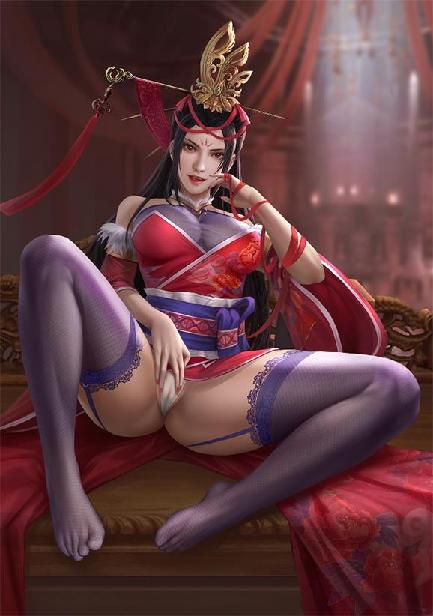
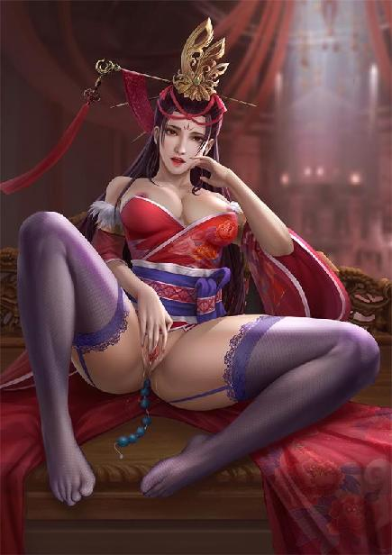
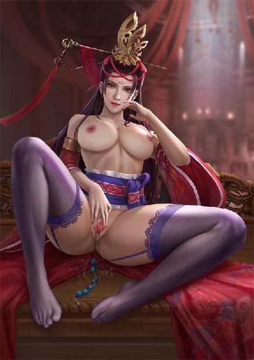

第85集·鹿死谁手
唐国篇（9）
出版日期：2020-03-03
【本集内容简介】
小紫的母亲竟是西施？她遗传有碧姬的离魂之症？不行，哪怕开山搬海，程宗扬誓要把小紫的奇病治好！
救来的摩尼教善母不能动，不能碰，体内居然被释特昧普下了血莲花种，这该如何是好？
十方丛林扣住袁天罡不肯放人，一路上埋伏下重重杀机。这个龟儿子老神棍，到底应该怎么救……
※ ※ ※ ※ ※

封面人物：吕雉

封面人物：吕雉（限制版1）

封面人物：吕雉（限制版2）
碧宛。
这个名字程宗扬几乎已经忘掉了，偶尔想起，也往往只记得别人对她的另外一个称呼：碧姬。
没错，就是那个被南荒人用来待客的淫奴。小紫的娘。
没想到居然还有人知道她，甚至记得连她自己都已经忘掉的本名。
夷光……
程宗扬感觉有点耳熟，但不记得是在什么地方听过。也许是穿越之前？
程宗扬没有回头去看小紫，他全部的注意力都放在面前的白衣女子身上。虽然她没有表露出敌意，但修为在那放着，起码是六级上，甚至是六级巅峰。
小紫的声音在背后响起：“你认错人啦。你说的那人，跟我没有关系。”
那女子深深看着她，“她的病一直没有好吗？”
程宗扬忍不住道：“她得了什么病？”
“离魂之症。”白衣女子望着小紫道：“我们刚见到她的时候，她正和族人们在海中采蚌。当她露出水面的刹那，就像是世间最美丽的珍珠，是大海最慷慨最神奇的馈赠。”
“你们？”程宗扬敏感地觉察到这个词的内涵。
白衣女子坦然道：“我，还有阿举。”
果然！程宗扬心头一阵剧跳。他已经意识到这女子的身份和来历。
小香瓜的师傅，原来看着这么年轻……
小紫笑吟吟道：“然后呢？”
“那时的她，是个温柔善良的姑娘，是我见过最乖巧，也最容易满足的女孩子。当时阿举给了她一匹丝绸，她开心了很久。”白衣女子眼中露出一丝惋惜，“但后来她离魂症发，精神越来越不济，日复一日神思不属，心智渐塞……”
离魂症？小紫的娘是得了离魂症，才逐渐变得愚昧无知？
程宗扬不敢回头去看小紫的表情，开口道：“你跟她关系挺好？”
“她救过阿举。”
“你跟岳……武穆王的关系……”
白衣女子轻轻笑了一声，“年轻人，我可不是来让你质问的。”
“一时失言，还请见谅。”程宗扬赶紧道歉，又问道：“贵门医术通神，难道没办法治好她的离魂症吗？”
“我们尝试了一些药方，但都没有见效。师姐推断，夷光的离魂症可能并非外因所致，而是源于自身，也许她的神魂与那片大海联系在一起。她离开故乡太久了，失去了大海的滋养，神魂逐渐枯萎。只有回到碧鲮人的海洋，才能保全她的魂魄，让她逐渐恢复神智。但也可能已经太迟了。”
白衣女子望着小紫，温言道：“你如今气色尚好，但眸中紫气渐露，唇痕杂纹渐显。我猜，你口中左下唇的位置，如今隐隐有横筋浮现。昼间易倦好困，入夜则神思不宁，常有身在床榻而神魂离体之感……”
“没关系哦，”小紫打断她，笑道：“我有程头儿抱着我睡。”
白衣女子怜惜地看着她，“幸好你尚是完璧，故得保全。他日若是合欢，切须谨慎。以免……”
小紫再一次打断她，“不进来坐吗？”
白衣女子没有再说下去，她温柔地笑了笑，“不了，今日只是来看看故人之后。”
小紫笑道：“那就再见啰。替我向乐姐姐问好。”
白衣女子微微颔首，接着一阵长风掠过，那个仙子般的身形冉冉消失。
程宗扬回过头，面沉如水，“干嘛把她赶走？”
小紫笑道：“你要留她吃饭吗？”
“你昨晚睡着没有？”
“人家又不喜欢睡觉。”
“你一天要睡六个时辰，真正睡着的时间有多久？一个时辰吗？”
“大笨瓜，不要你管我。”
“干！”程宗扬爆了句粗口，黑着脸道：“立刻收拾东西，回南荒！”
“别听她吓唬你啦。”
黛绮丝仍在沉睡，程宗扬用大氅把她包起来，扛在肩上，一边恨声道：“我就说你怎么蔫蔫的，精神越来越不好。”
“哪儿有？”
“死丫头，你还嘴硬！”程宗扬怒道：“你非要像你娘那样……”
程宗扬说着猛地闭上嘴。那个夷光，曾经是个温柔乖巧、心地善良的女孩，最后却因为离魂症，堕落成脑中只剩下欲望，随意与人交合的淫妇……
想到小紫也可能重蹈她的覆辙，程宗扬感到一阵巨大的恐慌。
小紫笑道：“我是完璧哦。”
程宗扬摸了摸小紫的脸颊，“听话。”
“而且，我有妖铃哦。”
“它能保护你一辈子吗？”
“大笨瓜，别生气啦。”小紫抱住他的手臂，“只要我还是完璧，就没有关系。”
“怎么没有关系！不行！必须回海边，你不走是吧？我走！”
“那你自己走好了。”小紫道：“你走了，我就去炸掉大慈恩寺。”
程宗扬无奈道：“你怎么不爱惜自己呢？”
“安啦，大笨瓜。她说的未必就是对的哦。”
看着死丫头无忧无虑的笑容，程宗扬心头不由揪紧。
这死丫头，整天都在笑嘻嘻地哄自己。可她心里怎么想的呢？那个不靠谱的爹压根儿不知道她的存在，那个更不靠谱的娘……而且，碧姬可是被小紫亲手杀死的。虽然她出生的时候，碧姬已经丧失了正常的理智，但死丫头要是知道自己的娘亲是因为生病才变成这样的，会该怎么想……
“这地方别待了。”程宗扬说道：“燕姣然都能轻易找到我们，还是赶紧回去。”
法云尼寺与程宅只有一街之隔，穿过长街就是。吴三桂守在门口，见程宗扬过来，立刻迎上前去，“谢正使来了。”
“谢无奕？他竟然肯从青楼出来？”
虽然心里有事，但这位浪荡大爷亲自上门，肯定有要紧事——就算没事也不能不见。程宗扬把黛绮丝交给小紫，前往主厅见客。
谢无奕正和石超说话，见了面也不废话，开门见山地说道：“听说你主持宋国和昭南签了和约？帮我也签一个呗。”
“……谢大哥，你这是唱的哪一出？”
“就是咱们签个互不攻伐的约书，三年五年，十年八年的都成。够我交差就行。”
“好端端的，签什么和约啊。”
“自家兄弟，不说外话。”谢无奕道：“咱们晋国现在是乱不起，朝廷那帮爷儿们比我强点儿也有限，诗文竟日，歌赋自娱，能不祸害百姓，就算是对得起俸禄了。里里外外的，全靠王丞相自己打理。我瞧着都替老头累得慌，又帮不上什么忙。昨个儿听说你主持宋国跟昭南签了和约，我一想，我也跟你签个得了，就当是给老头分忧吧。”
“你是听说什么了吧？”
谢无奕嘿嘿一笑，“听说你们吃了大亏——放心，我不占你便宜，咱们两边公公平平签一份就成。”
与昭南签订的密约是程宗扬的得意之笔，但外界普遍认为宋国吃了大亏，其间的奥妙不足为外人道也。这种闷声大发财的感觉很好，如果跟晋国也照样来上一份……程宗扬第一个感觉就是危险！以程氏商会的底蕴，拿下昭南已经是极限了，还不知要多久才能消化下来。如果狮子大张口，连晋国一并吞下，结果只可能被撑死。
但仅仅是一份互不攻伐的和平条约，对晋宋两国来说，都是一桩好事。这位大爷虽然纨绔了点，这事还真挑不出错来。
“互不攻伐？”
谢无奕笑嘻嘻道：“你总不能赔我钱吧？”
“只是宋国？”
“怎么？嫌少？”
程宗扬笑道：“谢大哥别忘了，我还担着汉国的正使呢。”
谢无奕往前倾了倾身子，“说来听听。”
“谢大哥既然提到这事儿，我倒是有个想头。”程宗扬微微一笑，“三国会盟。”
“会盟？”
“对。晋国王丞相，汉国霍大将军，宋国贾太师，三位重臣各自代表主君聚首盟誓。谢大哥，有兴趣吗？”
谢无奕脸色数变，他是个纨绔性子，听闻程兄弟主持宋国与昭南的和约，就临时起意，兴冲冲找上门来，根本没想到程宗扬会玩这么大。他跟程宗扬代表晋宋签一份和约是一回事，三位能左右朝局的权臣会盟，就是另一回事了。
汉、晋、宋，这可占了六朝的一半。三国会盟，彼此的立场、诉求、纷争、利益，与其余诸朝之间的牵扯、沟通、安抚……岂止是千头万绪？单是届时由哪位来执牛耳，说不定就能把好事办成坏事。
谢无奕忽然觉得责任好重，不禁露出为难的神色，有些打退堂鼓。
程宗扬笑道：“这事太大，咱们也做不了主。谢大哥不妨私下问问王丞相，看他是个什么意思？”
石超见谢无奕呆着脸不作声，忍不住替他说道：“宋国的贾太师和汉国霍大将军呢？”
“放心！都包在我身上。”
程兄弟说得笃定，单剩一个王老头，那就好办了——王老头说怎么办，自己就怎么办。
谢无奕呼了口气，脸上回过颜色，一擂几案，“干了！”
石超送谢无奕回平康坊，顺便考察一下各大青楼年节时的市场行情。程宗扬则来到侧院，找到袁天罡，劈头问道：“夷光是谁？”
这个名字如果是自己在穿越之前听过，肯定是名留青史的人物，但程宗扬怎么也想不起有哪位知名的美女经历跟碧姬一样惨的，甚至连点相似的影子都找不出来。
幸好自己还有个儿子，自己记不清的，说不定儿子知道。
果然，这龟儿子真知道，“夷光？施夷光啊。”
“施夷光是谁？”
袁天罡正撅着屁股摆弄一堆铜丝，头也不抬地说道：“西施啊。”
程宗扬脑海中仿佛被一阵风暴卷过，连表情都扭曲起来。
碧姬是西施？
碧姬居然是西施！
怪不得南荒那种穷乡僻壤，会出现如此绝色，鸡窝里硬生生飞出只金凤凰。岳鸟人专门去南荒，除了被狗咬，还是冲着这位四大美人去的？连西施都能找得到，鸟人的运气也太好了吧？对了，还有杨玉环，四大美人鸟人找到了两个。幸好未来的长安街头霸主当时还是个小妹妹，才没让他得手。
问题是岳鸟人为什么要给她改名？把流香百世的西施收入房中，难道不应该拿出来炫耀吗？为什么还要藏着掖着，不让外人知道？这种举动，别说跟岳鸟人嚣张霸道、见谁踩谁的人设不符，就是一般的穿越者，攻略到如此有名的美女，还不得全服撒花，狠狠收割一波羡慕嫉妒恨？
按照自己对岳鸟人操性的深刻了解，那鸟货要是凑不齐四大美女，把身边的姬妾改名叫王昭君、叫貂蝉，就图过把干瘾这种鸟事，他绝对干得出来！
可他偏偏把正牌四大美女之首的西施改了名，改成个十三不靠，甚至还暗含污辱意味的碧宛……他是觉得碧姬有多不配西施这个名字？
燕姣然刚才说了，碧姬还救过他。岳鸟人就是这么报答她的？一通骚玩，害人家得了离魂症，然后打发走了事？还不负责任地给人家肚子里留了个种？这是什么人性？简直就是人渣中的人渣！垃圾中的垃圾！混账中的混账！畜生中的畜生！缺德到掀开天灵盖都能冒烟那种！
那可是西施啊！
程宗扬一肚子说不出来的滋味。碧姬的身份是个无法宣扬的秘密，知道碧姬的不知道西施，知道西施的又不知道碧姬。看来这个秘密只能藏在心里，烂在肚子里。
程宗扬已经打算好了，袁天罡追问的时候，自己要一脸神秘地摇摇头，告诉他这是秘密，然后在他眼巴巴的乞求下，扬长而去。憋死他！
可袁天罡这龟儿子压根儿就没反应，他拿着一把涂了漆的铜丝，在一堆密如森林一样的小柱子上缠来缠去，神情专注无比。
龟儿子没反应，程宗扬自己倒是憋得受不了，终于忍不住咳了一声，清了清嗓子，“我见过西施。”
“唔。”
“西施！四大美女！”
“嗯。”
“你丫的不好奇吗？”
“咹。”
“你是不是真的不能人道了？”
“让让，让让。”
这龟儿子油盐不进啊。程宗扬只好放弃，“你这弄什么呢？”
袁天罡眼中立刻迸出两道贼光，“核心处理器！”
“啥？”
“CPU！”
程宗扬差点儿被口水呛到，传说中全手工制作CPU的人间奇葩，居然让自己遇到了？
“你整这东西干嘛？”
袁天罡眼神更亮了，“看妹子！”
程宗扬发现自己错了，这孙子不是人间奇葩，而是非人类的奇行种。
“你脑子坏掉了？这么多活的你不看？手工缠个CPU看妹子？你是打算手工造台电脑出来？就算你做出来，那像素得低成什么样？能分清脸和屁股吗？”
“你懂个屁！”袁天罡怒斥道：“只有二次元才是最纯洁，最完美的！所有美的极致都只存在于二次元！”
“……你这是受啥刺激了？”程宗扬道：“赵飞燕她不美吗？杨玉环她不美吗？还有你紫妈妈……”
“别跟我提杨玉环！”袁天罡的嘴唇都哆嗦起来，眼中流露出心碎的绝望和受到极度残忍伤害的痛楚，“她……她……她居然说脏话！”
哎妈，你的梦中情人何止是口吐芬芳啊？因为她说脏话，你就被刺激得手缠CPU？要是再知道点别的，你还不得被刺激得手磨歼星舰，毁灭全世界？
杨妞儿还真能耐，居然能把人的潜力压榨到这种地步。这要真做成了，六朝的科技水平往前飞跃了何止一大步？从农耕直接进入到数字时代，那边还靠天吃饭呢，这边就大干快上跑步进入二次元的新世界。这么说，杨妞儿还是人类进步的推动者？
“得，跟你的纸片人妹子玩去吧。”
“不许你污辱我的信仰！”
程宗扬拍了拍他的肩膀，“加油吧。诶，你干嘛用铜丝？银子不是导电更好吗？”
袁天罡呆了一会儿，喃喃道：“穷惯了啊……”
说着一把他拽住程宗扬的衣袖，“给我金子！”
“干嘛？”
“黄金稳定啊，抗氧化，延展性强。当我跟你借的！”
“你都欠我多少了？天天在我这儿混吃混喝，还要黄金？就为了让你看二次元妹子？”
袁天罡抱住他的腿，“一点！就一点！银子多给点儿就行！”
程宗扬抬脚想把他踢开，忽然想起件事，“你这缠法，什么时候才能看见二次元妹子？我给你指条路子——娑梵寺下院……”
听程宗扬说完，袁天罡立马爬起来，“真的假的？”
“你去看看。”
袁天罡抓起羊皮褂子往身上一套，小跑着出了门。
“这龟儿子……老敖，你跟着！别让他死外头了！”
※ ※ ※ ※ ※
“这是在兴庆宫找到的。”
程宗扬马不停蹄来到贾文和的住处，将一只锦囊放在案上，“像是给我的。只不过云里雾里的，没看明白这是个什么意思？”
贾文和摊开信笺，看了一眼，然后起身从书架上取下书卷开始翻阅。他翻书的速度极快，整卷书几乎是一扫而过，翻完一卷又紧接着一卷。
程宗扬看得目眩神驰，心下不由嘀咕，这翻书翻得跟扇风似的，别说里面的字了，就是少两页他看得出来吗？老贾不会是故意装个大逼来吓唬我的吧？难道他也是个奇行种？
片刻后，贾文和将一卷书册放在案上。那是一卷诗集，摊开部分赫然写着：晨烛照朝服，紫烂复朱殷。
程宗扬心头一震，朱殷！那位瑶池宗的奉琼仙子？这是她留下的？难道是她在向自己求救？
问题是除了点出她的名字，别的什么线索都没有。她想说什么？让我上朝的时候救她？
贾文和按住书卷，点了点上面一句：始出里北闬，稍转市西阛。
程宗扬对着诗集陷入沉思，片刻后抬起头，诚恳地问道：“什么意思？”
贾文和已经习惯了自己主公的不学无术，“从里坊的北门出，转过东市的西墙。”
程宗扬沉思道：“为什么不是西市？”
贾文和不动声色，“因为是上朝。”
对哦，大明宫在东面，上朝要是绕到西市，那是路痴。程宗扬寻思了一下，从里坊的北门出来，转个弯绕过东市的西墙，那么只有一个可能……
“安邑坊！”
安邑坊自己并不陌生，就位于自己所住的宣平坊正北，西边是咸宜观所在的亲仁坊，东边是水香楼所在的靖恭坊，它的北边就是东市。
没想到朱殷会离自己这么近，仅仅一街之隔。
程宗扬神情数变，最后把那只锦囊推到一边。还没吃到口的朱殷是很重要，但自己眼下还有更重要的。
“老贾，跟你商量个事。”
“嗯？”
“我要去南荒。”
“何时？”
“越快越好。这边的事我都交给你。”
“你是主公。”
“我知道。虽然我说了算，但我一向很开明，所以才跟你商量。”
贾文和淡淡道：“属下是说，你是主公，要担起责任，焉能一走了之？”
程宗扬张了张口，最后颓然道：“我真有急事。”
“说。”
“是小紫……”
程宗扬将离魂症的事说了一遍，重点是小紫的精神状态别说和南荒时相比，就是比起在建康、在临安，都差了一截。万一出现和碧姬一样不可逆的损伤，自己还活个什么劲儿？什么王权富贵能比得上死丫头一根头发要紧？
“然后呢？”
“然后？然后我就待在南荒吧，哪儿都不去了。”
“如此，将置吾等于何地？”
程宗扬苦笑起来。
“吾等追随主公，为主公鸿图大业殚精竭智，筹谋献策，主公创业未半而中道归隐，弃吾等如敝屣。敢问主公，意可能平？心可能安？”
老贾说的太文雅了，其实意思就是问自己的良心是不是被他娘的狗吃了。
程宗扬苦笑道：“我知道我扔这堆烂摊子就跑是够混账的，但我也不怕你笑话我，小紫就是我的命。”
“不能让紫姑娘独赴南荒？”
“不行！”程宗扬摇头道：“我离不开她。老贾，你尽管骂！反正我不打算改。”
“若是诊治有误呢？”
“前车之鉴啊。”程宗扬道：“我赌不起，更输不起。”
贾文和叹了口气，“那就花钱吧。”
程宗扬立刻站了起来，“花钱能治？花多少都行啊！怎么花？”
“派人去南荒，将海水取来。”
“哎！这是个主意啊。”程宗扬拍案道：“既然过不去，就把海搬过来！”
程宗扬大喜过望，立刻开始盘算，“要用海水浸浴，至少要二百斤。一次两石，一天一次，从长安到南荒，来回差不多要走六个月，骑马会快一些，中间设驿站，用驿马传递，两个月就能搞定。先按六个月算，两人一组，中间不停的话要派三百六十个人。驿站先设五十个！两人四马……不够，得六马！那就是一百人，三百匹马。人工、牲口、饲料，再加上建筑费用、管理……全部投入摊平，两石海水运回来的成本……”
“大概二百枚金铢！”程宗扬喜笑颜开，“这钱花得起！”
看着贾文和面无表情地收起诗卷，程宗扬一阵心虚。
二百金铢，合四十万钱了，一天四十万，一年下来得多少？运的还是不能吃不能喝，只能泡澡的海水，这跟拿金铢打水漂也没什么区别了。
程宗扬赶紧把他拖下水，“老贾，这是你的主意，可不能赖我！”
贾文和倒不介意替主公背黑锅，可主公这算法着实太混账了，以他的镇定都觉得如梗在喉，不吐不快。
“一月一次足矣！何需每日两石？设驿站以搬海更是旷古奇闻！”
“一月一次？你是想让我死！”程宗扬冷笑道：“我这就走，去南荒！这辈子都不回来了！撂挑子就撂挑子！反正我的命要紧！”
看着一向喜怒不形于色的老贾这会儿脸都青了，程宗扬不由良心发现，感觉有些过意不去，干笑道：“老贾，是不是觉得我特像昏君？没关系，你尽管说！该批评就批评！批评使人进步！”
贾文和似乎在运气，过了一会儿才开口道：“主公对赵后那番话，尽显仁者之心。”
程宗扬收起嘻笑，他揉了揉面孔，把得知离魂症后那点心慌压制下去。
沉默片刻之后，程宗扬道：“不怕你笑话，我真是挺心痛她们的。因为女人的事，你没少讽刺我，我知道你说的有道理。她们跟着我，也大都有不得已的原因，不是哪个都心甘情愿的。但我敢说我有一点做得比别人强：我尊重她们。虽然也不太多。”
“如果她们有相爱的人，愿意离开我，我真不介意。但真没有比我更尊重她们，更爱护她们的人了。有个别长得胖还心眼儿小的人讽刺我，说我屋里好多是二手的，说我有什么不良嗜好。其实并不是这样，正是因为她们受过伤害，有过比较，才更知道我的好。而不是像合德那样，一张白纸，完全因为单纯被我骗上手——哎，我是不是有点厚脸皮？”
贾文和面无表情。说了半天，还是捞到碗里就不肯撒嘴，非得独吞才舒坦，偏偏还要立个牌坊安慰自己。自家主公这点子小心思，贾文和洞若观火。但揭破就没意思了，还得给他再添点油，让他把牌坊立得更体面些。
“主公对女流之辈尚如此仁心，何况吾辈？”贾文和意味深长地说道：“何况天下子民？”
程宗扬赶紧摆手，“你别再诱惑我称霸天下，一统六朝。我能管好自己这一摊子就不错了。说的再冠冕堂皇，什么吊民伐罪，解民倒悬——我不敢说这么说的全是野心家，但所有野心家都喜欢拿它当借口。就为了自己的野心，搞得兵连祸结？我对现在的生活状态已经挺满意了。等弄死那帮秃驴，就更满意了。”
贾文和沉默半晌，然后长揖一礼，“属下受教。”
程宗扬笑道：“我没看错吧？你这么客气，我都不习惯了。”
你在紫云楼当着大唐诸王的面高歌一曲，什么守土开疆，四方来降，我还以为你良心发现，准备干点正事。合着你就是唱着玩儿的？你这烂泥怎么扶都不往墙上贴，我能怎么办？我也很为难啊。别说我不是神仙，就算是神仙，遇见你这种的，他也没招！
“对了，十方丛林那头怎么样？你见了净念怎么说的？”
这会儿才想起来问正事？要不是看你还不算太草包，胸襟气度也凑合，再加上有那么点儿天命在身的意思，我早就装傻苟且了！八方皆敌，十面围杀，对付起来容易吗？你凭什么以为我随便出个主意就能把他们全搞定？我也要很花心思的好不好！
……看在那颗赤阳圣果的面子上，就当这条命是欠你的，这辈子给你当牛做马吧。
贾文和淡淡道：“此事交给属下便是。”
这话程宗扬听着就省心，外面有老贾顶着，自己正好跟内宅的姬妾们厮混，这日子才叫惬意！这才叫生活！
他生怕贾文和反悔，赶紧道：“那成！都交给你了，我去看小紫！”
程宗扬兴冲冲走了。贾文和觉得肩上的担子又重了几分。
不然还是把会之请回来吧，那位身子骨比自己柔软，一边拍着马屁，一边还不耽误办事。大家都是臭名昭著的奸臣，凭什么让他躲清闲？可秦会之那人品，遗臭万年也就罢了，我贾文和干了什么也臭名远扬呢？
不然把班超也叫来，分他几口黑锅背背？要臭大伙一块儿臭，都是给主公办事的，谁也别想独善其身！
说干就干，贾文和摊开一幅雪花笺，提笔写道：敬仲公足下……
他想了想，添了个“子”字：敬仲公子足下——这下能把他给哄高兴了吧？
※ ※ ※ ※ ※
程宗扬不知道自己的心腹谋士正打着主意，准备平分黑锅，搞议事开放，黑锅均沾，心无挂碍地直奔内宅。
黛绮丝被安置在二楼一间僻静的厢房内。程宗扬进去时，她刚刚醒来，此时躺在锦榻上，身上只有一套新换的霓龙内衣，鲜艳的紫红轻纱衬着她雪白而又丰腴的肉体，愈发香艳夺目。而且她穿的还是最暴露的一款，从上到下，最宽的部分就没有超过两指的，那种欲露未露胜似全露，欲遮未遮等于没遮的香艳之态，比纯粹的裸体更令人血脉贲张。
程宗扬伸过头去，“你在干嘛？”
小紫道：“看怎么把血莲花种取出来啊。”
程宗扬定睛看去，只见一只象牙蝎子正在黛绮丝裸露的肚脐周围盘旋。
“有办法吗？”
“还在想呢。”
“不许想了！赶紧歇着去。”程宗扬把小紫推到一边，在榻旁坐下。
先低头看了看黛绮丝的肚脐，并没发现什么异状。如果非要说有什么不一样的话，就是黛绮丝的肚脐形状太标准太完美了，浑圆精巧，毫无瑕疵，就像是专门设计出来的一样。到底是生命之树长出来的果子，程宗扬硬是从这具完美的肉体上，感受到了工业化的美感……
程宗扬把象牙蝎子丢到一边，免得小紫再操心，一边对黛绮丝道：“他们是怎么把血莲花种下去的？”
“我的意识被禁锢之后，他们喂我吃下一颗莲子。那颗莲子是红色的，像是血肉揉成一样，有很浓的血腥气。吞下那颗血莲花种之后，它就一直滑到我腹腔的位置，在那里停留下来。”
黛绮丝轻柔地一笑，“我是不是要死了？”
她神情间并没有太多的伤感，能够从蕃密手中逃脱，死亡已经是极大的幸运了。
“别瞎想，不会的。它一时半会儿不会发作。而且即使发作，也只会暂时影响神智，不会危及生命。”
黛绮丝美艳的面孔上浮现出一丝红晕，轻声道：“我愿意把它献给你，即使面对死亡。”
“别担心，等我逮到那个金毛，肯定能问出解法。”
小紫取出一颗水晶球，放到黛绮丝嘴边，“吞下。”
黛绮丝毫不迟疑地张开口。那颗水晶球足有鸡蛋大小，黛绮丝喉头无力，原本想着很难吞咽，谁知那颗水晶球落入口中，就像变成液体一样流进喉咙。
程宗扬认出那是小紫炼制的水晶念珠，这会儿只取了一颗，那条乳白色的长筋还在，一同滑入黛绮丝喉内。
乳白色的长筋越来越短，快到吞完的时候终于停了下来。
过了片刻，小紫扯动长筋，将水晶球从黛绮丝腹内取出。
整只水晶球光泽如新，没有沾染上任何胃糜和食物的痕迹，看来这位光明圣母也早就到了不用饮食的境界，整具身体内外澄澈，洁净无垢。怪不得蕃密那帮疯子这么馋她的身子，宁愿耗时耗力一点一点炼化侵蚀，也没有直接用强。
小紫望着水晶球，目光微微闪动，“已经和血肉连在一起了。”
水晶球近乎完全透明，如果不是那根乳白色的筋绳，看起来几乎不存在，真不知道死丫头从哪儿看出来的。
※ ※ ※ ※ ※
“程头儿！”
敖润满头大汗地狂奔进来，在院中扯着嗓子叫道：“袁……袁先生出事了！”
“呯！”程宗扬推开窗户，黑着脸道：“龟儿子又怎么了？”
敖润喘着气道：“我跟袁先生一块儿去了娑梵寺下院，在塔上看到那座黄金坛城，袁先生当时就扑过去，抱着不肯撒手，还满嘴的胡话，说这是啥二次元天使小姐姐赐给他的礼物……”
敖润抹了把汗，“娑梵寺的和尚怕弄坏坛城，不敢硬来，就把袁先生跟那座黄金坛城一块儿扣下了。”
“信永呢？你没说他是我捡的疯子，让胖和尚抬抬手，先把人放了。”
“那坛城还在袁先生手里抱着呢。几个穿黑衣的和尚跟方丈嘀咕了一会儿，方丈才开口，说这事得你去一趟，不然弄坏了佛宝坛城，他也不好对寺里的僧人交待。”
“这个龟儿子！净给我找麻烦！备车！”
在内宅快乐的大计就此泡汤，程宗扬一头是火地下了楼，敖润迎上来，压低声音道：“我走的时候，方丈还说了一句：路上小心。”
他摊开手掌，“是拉着我的手说的。瞧，手心都被他挠红了……”
“……干！”
里里外外准备一番，出发时已经过了申时，赶到娑梵寺下院只怕已是黄昏。幸好为了便于善男信女们上香，娑梵寺等大雪一停，就立即出动全寺僧侣扫雪，清理出一条能容车马通行的窄道，行驶速度快了许多。
程宗扬面沉如水，老敖提到的那几名黑衣僧人他仔细询问过，听着就不像娑梵寺的人，光是气质，就跟娑梵寺格格不入，更像是大慈恩寺那些巡行僧。而信永最后那句叮嘱，更是意味深长。
十方丛林要对自己下手了？他们已经做好准备了？自己一时兴起，让袁天罡去看那块电路板，谁知道会自投罗网。但这事自己都没想到，十方丛林怎么可能想得到？
只能说机缘巧合之下，自己白送了一个袁天罡，才让他们抓住这个机会，临时起意来对付自己。
这一趟真正危险的未必在娑梵寺，信永那么油滑，在自己寺庙里对一国正使大开杀戒这种出力不讨好的事，他绝不会干。
那么真正的危险就是在途中，尤其是从曲江苑到娑梵寺下院这一段。
南霁云与往常一样，在前开路，负责掌车的是任宏，吴三桂和敖润挟弓执矛跟在车旁。可惜独孤谓还在京兆府交待情况，不然有这个唐国官方人物随行，好歹能让对方多些顾忌。但话说回来，就凭独孤郎那顺风尿湿鞋的运气，他不跟着说不定才是好事。
比起舞阳侯平日出行的阵仗，这次随行人员精简得多，前后不过三五个人，看上去轻车简从。至于车厢里面，却是大相径庭。
程宗扬抱着腿扭着腰，整个人几乎是蹲在座榻上才能挤下。其实车上人也不多，一个苏定方，一个王彦章，还有一个高力士。按说四个人足够坐下，但架不住从皇图天策府请来的这两位都是身材剽悍的壮汉，白胖的高力士夹在中间，挤得跟团橡皮泥一样。
程宗扬真没打算让高力士来受这活罪，但他向皇图天策府求援时，被杨玉环知道了，非要跟来看热闹。好说歹说才派了个高力士，让他作为太真公主的耳朵和眼睛，进行全程观摩，好回去巨细无遗地讲给公主听。
苏定方和王彦章这两位是卫公指派的，程宗扬不熟。这苏定方跟赵充国是同一个类型，虎背熊腰，身材魁伟，看着就特能打。王彦章个子不高，但他身上的肌肉就跟铁丝一样，高力士挤在他身上，程宗扬都担心这白胖子一个不小心，会不会跟气球一样被他给扎破了。
这两位一看就是冲锋陷阵的猛将，竟然被自己叫来当打手，真是浪费……程宗扬笑道：“大过年的给各位找麻烦，实在抱歉。”
“程侯不必客气。”苏定方道：“卫公军令如山，吾等只是遵令而行。”
高力士嘬着大红嘴唇，“咯咯”笑了两声，可惜他被挤得太扁，公鸭嗓生生被挤成了小母鸡，“咱家听公主的。公主让做啥就做啥，算啥麻烦？彦子，你说是不是？”
王彦章双手按膝，腰背挺得笔直。他年纪比苏定方、王忠嗣等人都小，比吕奉先也大不了几岁，据说是卫公早年从乡间捡来的孤儿，留在天策府养大。
“嗯。”
程宗扬干笑一声，挤成这样，聊天都聊不起来。当然，也是因为高力士身上的脂粉味太浓，吸一口都能嚼出渣来，没被呛死说明大家修为都够深。但这么憋着太耗真气了，只盼着那帮秃驴赶紧出来，大伙儿真刀真枪做过一场，也好少受点儿罪。
那帮秃驴似乎听到了他的心声，车马行至娑梵寺下院，一路上连个鬼影都没看见。
程宗扬下了车，先长吐一口浊气，这一路好悬没把肺给憋炸了。苏定方和王彦章两位就没这么幸运了，他们还得跟高力士挤在车厢里，坚持到刺客出现，或者再一路憋回家。
达摩院首座信威在门外迎候多时，合什施礼，“程施主。”
程宗扬板着脸道：“人呢？”
信威粗声大气地说道：“正在寺中，施主请。”
香火缭绕的寺塔内，满头白发的袁老先生正侃侃而言：“……为何发不了大财？根子就在你们这寺名上！”
“娑梵二字原本极好，但用作寺名就差了。先看这娑字——水者，泉也。泉者，钱也。客官会问了，这不是有钱吗？怎么会不好呢？往旁边看，是个什么？少！寺名第一个字就写着钱少，你还指望能发大财？”
围坐在侧的信寂、信德、信道等人恍然大悟，一堆光头点得此起彼伏。
“单是钱少还不怕，最要命的是下面这个字——”袁天罡肃然道：“女！女人是什么？败家玩意儿！你们佛门怎么说的？五漏之体！漏光、漏风、漏气、漏财，你挣多少都能给你败喽！”
“着啊！”众僧纷纷抚掌，抱怨道：“我说挣的怎么赶不上花的呢？”
“为了建这佛塔花了多少！”
“外面看着光堂，内里不知打了多少饥荒呢！”
旁边一个沙弥小声嘀咕道：“五漏之体可不是……”
“你给我闭嘴！”信寂虎着脸厉声斥道：“就你能？在座这么多大师都没你懂？”
沙弥赶紧低头。
信德捧了杯香茗，“老先生，喝茶！”
袁天罡脸一变，抱紧怀里的电路板，“别想让我撒手！”
信德哈哈笑道：“老先生过激了！过激了！咱们接着说！”
“再说这个梵字。双木成林，好兆头！但下面这个凡字——佛门净地，哪儿容得凡心俗念？凡心不除，还能成佛吗？还能指望佛祖保佑吗？你们说，是不是这个理？”
那堆光头又是一阵此起彼伏，无不深以为然。
信寂道：“老先生，你看敝寺这寺名……怎生化解才好？”
“改！”
众僧脑袋都伸了过去，“如何改？”
“先把女字和凡字给去了。”
“沙林？”众僧欣然道：“这名字听着顺耳，又暗合沙门宝树之意，气味甚佳！”
袁天罡差点儿背过气去，沙林寺？还不如改成毒气寺算了。
“顾头不顾腚！”袁天罡呵斥道：“钱少就不管了？”
“可不是嘛！”众僧纷纷击额懊恼。
信德道：“那再把‘少’去掉，叫水林寺？”
袁天罡道：“木得水而活，林得水则涝。”
“那改成水木寺？”
“水木一名不够雅训。”最有学问的戒律僧信空道：“有道是水木清华，不若改成清华寺？”
袁天罡一阵暴咳，脸上的老人斑都快掉下来了。我们清华也是有女生的好不好！
信寂上前给他捶背，“老先生，你的意思呢？”
“去水留少，叫少林寺！”
“少林？此为何意？”
“天机不可泄露。”袁天罡傲然昂起头，“老夫只能说，此名有大气运，可保贵寺千年殷富。”
几名光头凑到一起嘀咕几句，信德伸出手掌，一脸讨好地说道：“老先生，帮贫僧看看手相呗。”
程宗扬黑着脸进来，信永在旁道：“瞧，我说没亏待老先生吧。好茶好水地伺候着，没让他受一点委屈。”
袁天罡矜持地微微一笑，“程儿，你来了。”
程宗扬强忍着掐死他的冲动——我差点儿都忘了，你他娘的还是个相士呢。
“袁先生，先把东西放下。”
袁天罡一梗脖子，“有死而已！”
信永抖着下巴笑道：“老先生见到佛门至宝，受其神威震慑，一时转不过弯儿也是有的。程施主，我们先过去说话？”
信寂凑过来，在信永耳边嘀咕了几句。
信永脸上的肥肉抖了起来，“改什么改！改什么改！改名不花钱吗？匾额、碑文、楹联、灯笼，寺里用的香烛、木鱼、功德箱、功德簿……哪个不得改！金山银海填出来的，一句话就全换了？你这不是改名，是要我的命啊！”
信寂讪讪道：“这不是大伙儿都为庙里的亏空发愁吗？”
“亏什么亏？空什么空？”信永斥道：“这是负债经营！扩张性发财策略！对不对，菩萨哥？”
真没想到，自己在太泉跟信永乱扯的那些，胖和尚居然真听进去了，还学以致用。可扩张性发财策略是个什么鬼？
程宗扬竖起大拇指。
信永眉开眼笑，引着菩萨哥上了最顶层供奉三件佛门至宝的佛堂。
周围没有旁人，信永的笑脸顿时垮了下来，小声道：“菩萨哥，我不都说了吗？你咋还真来了？”
程宗扬笑道：“大和尚有请，我能不来吗？下刀子都得来！”
“哎哟哟哟，我的脸不值钱！你千万别给我面子。”
“那些巡行僧走了？”
“走了。”信永道：“来的延真和延济，都是窥基的铁杆！”
“哦？”
“菩萨哥，你知道我前天去大慈恩寺干嘛了吗？”信永道：“他们让我出头来对付你！”
“他们还真会挑人……”
“他们说，只要除掉你这个佛门公敌，琉璃天珠就归我们娑梵寺。我呸！想瞎了他们的心！他们也不想想，琉璃天珠本来就是我们娑梵寺的！”信永讨好地说道：“还是菩萨哥你亲手给我的呢。”
程宗扬笑道：“承你还记得我的情。”
“那可不是，做人得讲良心！”信永抖着下巴小声道：“他们还琢磨着让我在庙里设伏，等你一来就大门一关，全寺出动——我疯了我！他们倒是得意了，我呢？割鸡巴敬神，神也得罪了，人也痛死了。”
胖和尚就这点儿好，语言质朴，比拟生动，富有哲理和禅意。
“你怎么说的？”
“我拿人手不足给推过去了呗。我瞧着，他们贼心大着呢，八成会在路上下手。菩萨哥，你可得小心。”
程宗扬笑道：“那你给我几个人呗。”
信永苦着脸道：“我这会儿人手是真不够。癫师弟前两天又发痴了，我把他关在上院，达摩院最能打的十三棍僧都在乡里。”
“乡里？”
“这不下雪吗？施主们都被堵在屋里，不好来上香。那帮棍僧天天在庙里好吃好喝供着，养得跟牲口一样，总不能白养不是？我对信威说了，一人给他们一根棍儿，都下乡化缘去，讨不到都别回来。你别说，这大雪天，那些个棍僧跑得跟野狗似的，比牲口都好使。”
信永这经营思路，人尽其材啊，攥着蛤蟆都能挤出尿来。
“那坛城？”
“嘘……”信永竖起一根手指，侧耳听了听。
“先不说这个，正好菩萨哥你来了，有件事我愁了两天了，正想找你呢。”
信永绕过琉璃天珠后面的屏风，轻轻一推，木制的墙板打开一线，露出里面一个狭窄的空间。
这座寺塔七层八角，四面开门，没想到这里还设了个暗室。
室内除了一张床榻，再没有落脚的位置，一名年轻人正拥着被子，侧身卧在榻上，手里捧着一卷书册，借着外面昏黄的天光看书。
听到动静，他回过头来，一照面，两人都是大吃一惊。
“程侯？”
“光王？”
信永亲手沏了茶，又取了一碟点心，“那日贫僧去大慈恩寺的路上，遇到这位施主。当时他喝得大醉，人都快被雪盖住了。出家人，慈悲为怀，我让人把他带上车，又灌了热汤，救活下来。”
“等他醒来一问，我才知道还是位亲王，这可是场大功德啊。我赶紧让人备了车马，准备送他回王府。”信永抹了把油汗，苦笑道：“可王爷不肯。”
“为何？”程宗扬道：“太真公主为了找你，都快把那块地翻过来了。”
李怡沉默了一会儿，慢慢道：“信永师傅是我的救命恩人，程侯的为人，小王也信得过。我不敢回去……因为怕有人要我的命。”
“为什么？”
“我那天坠马的时候，虽然喝醉了，但心里头清楚——我是被人从马上踹下来的。”
李怡说着拉开衣物，露出腰肋处一大片青紫的伤痕，显然是被人重重踹了一脚，以至于连呼救声都发不出来。
程宗扬神情凝重，“谁干的？”
李怡摇了摇头，“风雪太大，我没看清。”
“你得罪过谁吗？”
李怡口气苦涩，“程侯想必知道，诸王之中，怡最为不堪，只有受人欺凌，何曾欺凌过他人？若非阿姐相护，宗室几无怡容身之地。”
程宗扬皱起眉头，李怡再不济也是亲王，何况还是人畜无害那种，谁会要他的命呢？
“你先留在此地，我回去见过太真公主，让她想办法找出元凶。”
李怡长出一口气，拱手道：“多谢程侯。”
“伤势怎么样？要不要找人来看看？”
“还好，就是呼吸时常常作痛。”
看来伤得不轻。程宗扬站起身，“好好将养。我去见公主。”
“等等！”李怡叫住他，又看了信永一眼。
信永连忙道：“我去再沏点茶！”
信永知趣地离开，李怡道：“有件事要告诉程侯——年节时，我去宫中向皇兄朝贺，无意中听到，有人欲对程侯不利。”
“是谁？”
“只闻其声，未见其人。听来是宫里的内侍。我听见他们说，程侯身兼两国正使，只要杀了程侯，必定朝野震动，届时大事可期……”
大事可期？有人想拿我搞什么大事？真是想瞎了他们的心！
程宗扬心下狠狠一咬牙，对李怡道：“我知道了。多谢光王。”
“程侯叫我李怡便是。”
程宗扬笑道：“六郎先歇息，明天我找个大夫过来。”
两人揖手作别，回到楼下，袁天罡正挨个给众僧看手相，什么事业线、命运线、生命线一通乱扯。好歹他嘴上还有把门的，没扯姻缘线——虽然据他说，那帮和尚真有个别姻缘线挺火的，但信永没戏。
没错，信永也看了。听说自己事业线火得一塌糊涂，加官晋爵不在话下，胖和尚笑得跟朵花儿一样。
到了重头戏黄金坛城，胖和尚就不肯了，“菩萨哥，这儿都没外人，小寂小德都是跟我去过太泉的，坛城的来历大伙儿也知道。场面话我也不说了，就说这佛门三宝的声势已经造出去了，给了袁老先生，我们怎么跟信徒们交待？”
“菩萨哥，真不是小永贪心。我这负债经营，扩张性发财策略，本来就背着亏空，万一因为失了黄金坛城，佛门三宝少了一件，庙里淡了香火，我们阖寺都得当裤子去。到时候满寺的和尚光着屁股乱晃，知道的明白我们是遇到难处了，不知道的还当我们遛鸟呢。菩萨哥，我知道你主意多，要不你给我想个辙？只要能把这事儿抹平，我立马双手奉上。”
程宗扬想了想，把袁天罡叫到一边，低声道：“把东西给他们。”
“不给！”袁天罡梗着脖子道：“这还是你给我出的主意呢。”
哎妈，自己那会儿把账赖到老贾身上，这会儿报应就来了。
“这东西是坏的。”
“中间断过吧？我一眼就瞧出来了。没事儿，只要芯片能使，电路我全能搞定！”
程宗扬道：“芯片也是坏的！没瞧见上头添了那么多东西吗？还镀了层金。哪儿还能用？”
“没事儿，我拆下来一样一样通电测试。只要封装还完整，里头的逻辑单元能工作就行。”
“……你怎么就这么死心眼儿呢？工科狗牛逼是怎么的？”
程宗扬只好抛出杀手锏，“实话跟你说，这东西是我找来的，从哪儿找到的我也知道。你把东西还给人家，我保证给你找个更好的。”
“又来蒙我？”袁天罡一脸不屑地说道：“刚才我都听见了，这东西是太泉得来的。先不说你能不能找到，就算你有这本事，你啥时候去太泉？猴年吗？”
“就这个月！”程宗扬压低声音警告道：“长安城就有个秘境，开启时算你一个，我带你进去！这事儿你给我烂心里，做梦都不许说！”
袁天罡看看他，又看看怀里金灿灿的电路板，最后往他怀里一塞，“我就信你一次！你要是找不到，可别怪我回来抢！”
……你个龟儿子哪儿来的信心？人家这回是不防你这么疯，下次你再来，癫头陀加十三棍僧，要不把你屎打出来，算你丫的屁眼儿紧！
做戏做全套，程宗扬恭恭敬敬地奉还了坛城，又施舍了一笔香油钱，算是替娑梵寺填补点儿亏空，然后带上袁天罡，在众僧殷殷挥手下启程北返。
※ ※ ※ ※ ※
袁天罡坐在敖润马后，腰弯得跟虾米一样。他本来要上车，可刚进去就被呛了出来。
高力士跟气球一样，整个人都被挤变形了，但人家一点都不慌，似乎被俩壮汉贴身挤着还挺享受。
苏定方是尸山血海里杀出来的猛汉，逼急了连马尿都喝过。王彦章年轻些，但在天策府历练多年，哪儿怕这点脂粉气？于是就苦了任宏。不过他在星月湖大营也不是白混的，虽然退役多年，但当年也是敢粪坑泅渡的强人，这点脂粉气也能撑住。
没错，受不了的是程宗扬。刚从娑梵寺出来不久，他就跟老任换了位置，宁愿驾车吹风，也不肯再受那份活罪。
他把任宏那副大胡子粘上，戴上斗笠，披了蓑衣，拿着马鞭，似模似样地驾着车。好在两匹驭马都是鹏翼社精挑出来的良驹，路是好路，车是好车，他那点儿驾车的本事足够用了。
十方丛林的秃驴如果出手，从娑梵寺下院到曲江苑这段路无疑是最合适的机会，就看他们动手的决心究竟有多大。
天色已晚，在前开路的南霁云身形如岳，身前横着一杆凤嘴刀，鞍角挂着一盏马灯，伴随着“的的”的马蹄声，灯光微微摇曳。敖润和吴三桂策骑紧跟着马车，警觉地望着四周。
车马往曲江苑方向缓缓驶去，夜色越来越深，敖润和吴三桂也各自点起灯，但马车上的两盏羊角灯仍然黑着。
一钩弯月挂在天际，车辆在雪野中行进，四周一片静谧。原野上覆盖着厚厚的白雪，在月光下映出一片清寒的雪光，使得视野比平常更明亮。
眼看就要抵达途中那处山丘，袁天罡忽然扬起脸，一动不动地对着天际。
他双目紧闭，牙关发出“咯咯”的摩擦声。紧接着，一股暗红的血迹从他鼻中涌出，流过花白的胡须，淌到他胸前的衣襟上。
程宗扬一眼瞥见，正要开口询问，最前面的南霁云忽然一勒坐骑，提起凤嘴刀，往前平平伸出，喝道：“出来吧！”
道路两旁的雪地涌动着，钻出一个又一个人影。他们黑布包头，戴着斗笠，身上衣黑如墨，只有手中的长刀雪亮。
那些黑衣人隐隐结成五人一组阵形，一眼看去，竟有四十余人。
※ ※ ※ ※ ※
程宗扬神情凝重，他故意只显露出三名护卫、一名驭手，就是示敌以弱，想让对手不要出动太多人。没想到十方丛林杀意如此决绝，一上来就是将近十倍的人手，誓要置自己于死地。
跟十倍的对手硬拼显然不明智。这些杀手的目标都在自己身上，此地四面都是旷野，自己驾车改道而驶，把他们的阵形拖散，靠着南霁云等人强悍的身手逐一击杀，无疑是最好的选择。
程宗扬一振缰绳，正要策马转向，袁天罡忽然睁开眼睛，嘶声道：“往前！往前！前面是唯一的生路！”
程宗扬毫不犹豫地喝道：“冲！”
南霁云一马当先，锋矢般往敌阵冲去。
最前面两名黑衣人往地上一滚，挥刀往马腿斩去。只听“噗噗”两声，那柄凤嘴刀以肉眼难以察觉的速度各掠过一道寒芒，分别刺进两名黑衣人背心，将两人戳了个对穿。
一刀斩杀两人，南霁云暴喝道：“哪里来的蟊贼！也敢阻我南八！”
南霁云声如雷霆，紧跟在后面的三人身形一滞，中间一人躲闪不及，被他的青骠马撞得飞起。接着凤嘴刀一吐一缩，左右两人头颅高高飞起，断颈溅出一片血雨。
剩下虽然还有数十人，但被南霁云声威所慑，不约而同地朝两边避让，错开锋芒之后再重新扑来。
吴三桂手执双矛，在马上左盘右旋，将来敌尽数隔开。接着弓弦声响，敖润弯弓在手，正中一名黑衣人的脑门，将那名扑过来的黑衣人射得倒飞出去。
三人出手剽勇凶悍，对面的黑衣人不禁一阵慌乱。随即山丘上传来几声尖利的唿哨，刚刚显露颓势的黑衣人齐声大吼，然后凶狠地猛扑上来。
一时间鲜血四溅，肢体横飞，在雪地上泼洒出一片片令人触目惊心的殷红。仅仅交手数合，那些黑衣人就折损了十余人，无论南霁云的凤嘴刀，还是吴三桂的长矛，只要中敌，都是一击毙命。
但那些黑衣人也非弱者，刚开始略显慌乱，随后迅速结成阵形，两人攻敌，三人掩护，在唿哨声的指挥下，分成数道横线，一波攻击完，另一波立刻接上，相互间配合得极为老道。
虽然他们头脸都包着黑布，但程宗扬已经看出来，这些人绝非大慈恩寺的巡行僧，只可能是训练有素的军中精锐！他们的制式长刀，他们的阵形，他们的指挥和配合，都不逊于汉国的北军八校尉，甚至能和羽林天军一较高下。
他们的不足之处也很明显，比起一往无前的汉军，这些军士更惜命，虽然悍勇，但绝不会顶着刀锋硬上。这种趋利避害的正常选择，在面对擅长破阵摧敌的南霁云和吴三桂面前，就成了绝大的破绽。
南霁云勇悍绝伦，那柄数十斤重的凤嘴刀，在他手中轻巧得如同一根灯草，往往两名黑衣人配合默契的左右夹攻，却被他一刀断颈，一刀破胸，迅猛得如同两刀同时落下。
吴三桂同样有勇冠三军之名，他双矛力大招沉，贯脑而过如穿豆腐。即使黑衣人衣内暗藏的战甲和护心镜也挡不住他的矛锋。
所以局面最危险的就成了敖润。老敖要护着身后的袁天罡，又要防着黑衣人靠近马车，他的铁弓早已收起，这会儿双手握着一柄长刀，左劈右斩，行进的速度越来越慢。
此时众人已杀到山丘下，南霁云浑身浴血，杀神一般破开重围，往山丘上猛冲。吴三桂紧缀其后，一边护着南霁云马后，免得他落入包围，一边策骑走的之字形，左冲右突，将那些黑衣人结成的阵形撕碎。
敖润又堕后数步，几乎紧挨着驾车的驭马。照应马车的同时，也避免被黑衣人左右合围。
马车后面，是两条淌血的车辙，雪地上伏尸处处。程宗扬一手提着马鞭，一刀握着长刀。双方搏杀得如此惨烈，却连一名伤者都没有，各种身首分离、胸穿肚裂，甚至被拦腰斩成两截的比比皆是。
一名黑衣人试图斩杀驭马，刚一靠近，程宗扬便挥起马鞭，鞭梢发出一声音爆，猛然卷住那人的脖颈，发力一抖。那人颈骨折断，碎裂的颈骨几乎从腔子中拖出，人在半空，已经死得不能再死。
以自己如今的修为，对付这种漏网之鱼轻而易举，但要像南霁云那样单骑破阵就别想了。南八那是真不怕死，视敌如无物，换成自己，肯定先设法求稳，一旦求稳，立马就会被围住，一旦被围，局势便急转直下。南霁云破阵看似轻松，不等于换个身手与他相若的，也能破得如此轻松。
一道道死气融入丹田，程宗扬双眼越来越亮。踏入通幽境后，他终于摆脱了吸收死气时的不适感，对死气的感应越来越清晰，同时也越来越好奇生与死的奥秘。
一个活人和一具尸体的差别究竟在哪里？从物质上讲，两者没有任何区别，化学元素都是相同的，到底是什么让前者能有无限可能，而后者只能化为尘土？为何死亡是不可逆的，生者终究会死亡，而死者不能复生？
自己的生死根可以化死为生，是不是意味着有某种可能，可以恢复生命？如果可能，重生者是延续了曾经的逝者，还是成为一个新生者？
这些……都等杀光敌人再考虑吧！
“杀！”
南霁云一声断喝，凤嘴刀匹练般卷起，将一名黑衣人当胸斩断。藏在黑衣下的铁甲飞迸出来，纷飞的血雨带着被斩断的双臂坠入雪地。
南霁云破开血雨，纵骑一跃，青骠马的铁蹄终于踏上山丘。
在他面前，是一个十人小队。他们结成一个三角形的锋矢战阵，护着中间一名戴着斗笠的黑衣人。
山丘下的黑衣人只剩下一半，但吴三桂和敖润均已挂彩。吴三桂双矛已折，腿上中了一刀，此时夺了两柄战刀，劈得虎虎生风。
敖润更惨，他为了掩护袁天罡，坐骑被黑衣人砍折前腿，敖润拼死把袁天罡扔到车上，自己被翻倒的坐骑压住小腿。若不是吴三桂杀回来相救，老敖已经被围上来的黑衣人乱刀分尸了。
这会儿双方已经杀红了眼，本来还惜命的黑衣人被激起凶性，甚至有人中刀之后，还扑上来抱住吴三桂的战马，要跟他同归于尽。
程宗扬并没有过多出手，除了斩杀几名试图扑到车上的黑衣人，都在小心地驾驭马车，还有空打量了袁天罡一眼。他鼻血已经止住，这会儿回过神来，双手死命抱着驭座旁的立柱，生怕从车上颠下去。
程宗扬没有等太久，就在南霁云杀上山丘，敖润坠马，吴三桂回援的刹那，旁边的雪地猛然鼓起，一柄长枪从雪中飞出，搅起大团大团的雪花，如同一条张牙舞爪的雪龙，翻滚着直扑车厢。
程宗扬双眼暴起精芒，这样才对！光靠士卒想堆死自己，除非他们全是星月湖大营那种都是由武穆王亲手调教出来的老兵！
程宗扬不言声地拖起长刀，就在长枪击中车厢的刹那，挥刀往那人身后一道暗影斩去。
“呯”的一声，车厢木屑纷飞，浅绿色的车窗玻璃带着大片大片的木屑飞迸出来，不是向内迸射，而是由内往外。那柄长枪卷着雪花刺进洞内，枪锋一震，如中金石。
一名身材魁伟的壮汉从车内钻出，他左臂挽着一面精钢盾，右手提着一柄开山斧，身披重甲，头戴凤翅盔。格开长枪的同时，他单手抡起巨斧，将一名黑衣人劈成两段，然后朝那名偷袭者头顶劈去。
程宗扬猛松了一口气。马车一路行驶缓慢，不是他不着急，故意要把敌人引出来，实在是载荷太重。少了一个苏定方，车身顿时轻了一半。
那名偷袭者遍身黑衣，枪如蛟龙，刺向苏定方的手肘。苏定方不闪不避，手中的巨斧陡然加速，要用一条手臂换他的首级。那名偷袭者只好回枪，双手握住枪身，架住斧刃。
“砰”的一声闷响，巨斧斫中枪身，那名偷袭者背后蓦然跃出一只巨大的狼首，獠牙外露，眼眸死白。
苏定方一斧逼得他底牌尽露，紧接着又是一斧，使他双臂剧震，左手的虎口暴出一条血痕。
程宗扬根本没理会这个使枪的家伙，只紧盯着他背后那道暗影。那人甫一现身，周围飞舞的雪花就仿佛变得尖锐，碰撞时甚至发出细碎的声音，然后凝结出一支支细小的冰锥。但这些冰锥并没有用来攻敌，而是全数落入雪地中，在雪下高速穿过。
程宗扬心下笃定，当它们再次出现的时候，自己这两匹驭马，包括袁天罡，恐怕都会被打成筛子。
他看都不看遇袭的车厢，直接一刀斩向那道暗影。
那暗影不动声色，待他长刀挥出一半，蓦然一举双袖，无数冰锥破雪而出，飞蝗般扑向马车。
程宗扬一声长笑，徒具威势的长刀陡然间杀气大振，将那暗影牢牢锁住，同时卸下蓑衣，席地一卷，将冰锥卷飞大半。
那暗影见他刀势平平，原本并没放在心上，此时才惊觉过来，失声道：“是你！”
“去死吧！墨枫林！”
程宗扬一声虎啸，刀势如同猛虎，将墨枫林的身影撕得粉碎。
破碎的黑衣仿佛无数蝴蝶飞散开来，衣内却空无一物。程宗扬斩中黑衣已经发觉不对，再去看时，只见一条模糊的白影贴在雪地上疾飞，所过之处，积雪凝结为寒冰，墨枫林如同贴在冰面上，流矢般滑远。
程宗扬心下大骂，这狗贼狡猾之极，一击不中，立即远飏，丝毫不顾他人。
那名使枪的家伙被苏定方劈得连连倒退，身后的狼首也变得明暗不定。眼看程宗扬一刀惊走墨枫林，他不敢再战，趁苏定方一斧劈来，借势倒飞，然后落荒而逃。
两名暗伏的高手一去，余下的黑衣人再无战意，立即兵败如山倒。南霁云单人独骑，将山丘那支指挥的十人队逼得弃战逃奔，随即策骑从山丘上冲杀下来，与陷入苦战吴三桂和敖润会合一处。接着苏定方扫清余敌，四人或骑或步，拥着马车往北疾行。
远处的雪野中，几名裹着白披风的身影从雪中钻出，望着山丘处那帮黑衣人狼奔豕突、溃不成军的惨状，目光中充满怒意。
“这厮好生狡诈！车中分明有脂粉香气，却舍得让自己的姬妾与他人挤乘一处，自己易容驾车！”
“都说这位程侯最是沾花恋草，怜香惜玉，原来都是装的！”
“那个周飞也是个废物，连苏定方三斧都接不住。”
“周少主惯于江湖过招，与这种沙场猛将交手，胜负只在毫厘之间。一旦失了锐气，再想扳回来就难了。”
最后一名一直未开口的年轻人道：“不知车里是程侯哪位姬妾？”
后面开口那人道：“主上放心，此贼旬日之内必将授首，到时尽收其姬妾，属下再仔细查问。还有当日那两个歌舞伎，定当毫发无伤，呈于主上堂前。”
“等不及了。”那人摇了摇头，“家里已经催过数次，让我返乡。那颗琉璃天珠既然是假的，我也没有理由再拖延下去，明日便须启程。到时十三会来，你们都听他的。”
“十三爷？他不是在秦国吗？”
“他在秦国做得太过，五哥让他回去休息，他不肯，最后不知怎么说动了老爷子，接管占城一带的海獠生意。他是个好事的性子，非要先到长安来。你们在他手下，要多用心。”
“是。”
那黑衣人轻轻笑了一声，“你们也不用太紧张，长安是老九的地界，不会由着十三胡来。”
“小的知道了。多谢十九爷。”
时鹫远远看了眼长安城，“走吧。”
※ ※ ※ ※ ※
众人浑身是血地回到长安城，城门早已紧闭。但曲江苑沿岸未设城墙，只有士卒把守，不等程宗扬取出卫公的令箭，高力士便跳下车，板着脸挥了挥手，那些士卒立即开关放行。
曲江苑一带，太真公主的名头比大内都好使，所有人都对他们身上的血迹视而不见。
进了城内，程宗扬直接点起羊角灯，一边是“漢國正使”，一边是“舞陽侯程”，巡查的军士都知道这字号不避宵禁，自然无人上前查问。
回到宣平坊，众人叩开坊门，在里正惊骇的目光下返回程宅。
看到门外守着的祁远、韩玉和青面兽等人，程宗扬长出了一口气。他最担心那帮秃驴两边同时下手，所以宁肯从天策府请来外援，也不过多动用宅中人手。
关上大门，众人都放松下来。此时除了吴三桂和敖润带伤，南霁云也在山丘上交手时，被一名黑衣人掷出的飞刀划伤手臂，但只算是皮外伤，对南霁云这等铁汉来说，跟蚊子叮一口差不了太多。
等众人在垂花门聚齐，程宗扬才发现，竟然少了一个人——王彦章！
“他缀着那些人打探去了。”苏定方道：“程侯放心，彦子从小爬冰卧雪，就是在雪中露宿十天半个月也无妨。”
怪不得载重轻了一半，我还以为你自己就有六七百斤……
“太危险了，其实不用打探也能猜出来，那帮军士不是神策军就是藩镇的牙兵。”
南霁云笑道：“神策军可没这么能打，要等死一多半才退。”
“那就是魏博牙兵！”一次性出动五十余人，长安城内如今唯一成建制的藩镇军士就是魏博的牙兵了。
南霁云与苏定方对视一眼，然后点头。
吴三桂拿烈酒将腿上的伤口冲洗干净，一边抹上伤药，重新包扎起来，一边说道：“山丘上压阵的是乐从训，可惜没砍了他的狗头。”
敖润一边用绷带缠着胳膊，一边咬着牙道：“使枪的小子是周飞！他跟刘诏交过手，枪法都没变。”
魏博牙兵与周飞都在意料之内，这次真正意外的是墨枫林。但得知那封密信与朱殷有关之后，程宗扬已经有预感会遇上这家伙，只是没想到他竟然会和周飞搅到一处。也不知朱殷究竟是死是活……
程宗扬笑道：“这回见识了天策府猛将大发神威，果然名不虚传！都是以一当百的好汉子！五六十个魏博牙兵，被咱们这帮兄弟们斩杀大半，痛快！”
任宏摆手道：“我连手指头都没动一下。还想着捡个漏呢，没想到那帮兔崽子跑那么快。”
“我也没杀几个。”苏定方笑道：“程侯手下这两位兄弟着实了得，到我们天策府当个教官绰绰有余。”
吴三桂和敖润连声逊谢，知道这是对方抬举，但都乐得眉开眼笑。
程宗扬笑道：“我走的时候就说了回来吃宵夜，快拿来给大伙儿填填肚子！还有我从新丰带过来的酒，给兄弟们一人上一瓮！”
韩玉跟几名兄弟扛着成筐的肥鸡、熟肉、面饼过来，青面兽一人抱了六只大瓮，一溜儿摆在阶下。众人风卷残云般吃喝起来。
高力士没进坊就跑回十六王宅，赶着给公主转播战场实况，顺带禀告李怡的下落。
袁天罡啃了半块面饼，头一歪倒在地上。众人吓了一跳，等他打起鼾来，才知道他是睡着了。
程宗扬本来想问问他的预感怎么回事，一看龟儿子都睡过去了，只好拎起他的衣带，把他丢回他的狗窝里。
贾文和立在院内，幽幽看着他。
程宗扬拍了拍胳膊腰腿，笑道：“你看，我说没事吧。”
程宗扬要去接袁天罡时，贾文和就极力劝阻，毕竟千金之子，坐不垂堂。往常以身为饵，是逼不得已之下，化被动为主动的权宜之举。这回鱼已经扑过来，程宗扬身为家主再以身犯险，未免不智。
不等贾文和开口劝谏，程宗扬赶紧说道：“幸好我这回去了，倒让我遇见一个人：光王李怡。”
贾文和静静听完，眉头慢慢拧紧。
程宗扬说完道：“我猜那帮商量要我命的太监，这回多半也来了，见局势不妙才没出手。”
贾文和不置可否地说道：“主公路上辛苦，早些歇息吧。”
“那行，外面你替我招呼一下，给大伙儿都封个红包。天策府的兄弟们厚实点，过年的时候我去看望卫公，瞧着天策府的日子也不宽绰。”
贾文和躬身揖手，“是。”
※ ※ ※ ※ ※
诸女都已经听到前院的动静，都在内宅等着，主人一进门，便纷纷上前替他解衣换履。
程宗扬衣上沾了不少血迹，靴上、袖上甚至还有零碎的血肉。别的女子还好些，孙暖不小心摸到，险些吐出来。
阮香琳道：“相公还是洗洗吧。”
“洗！别在屋里了，到外面把帷幕张起来！你们都过来伺候！”
众女笑着应了，分别去张罗帷幕，准备巾帕热水。
程宗扬随便洗了手脸，换了件轻袍，抱起小紫亲了一口，得意洋洋地说道：“你不知道老公今天有多厉害！一刀就把墨枫林那狗贼给吓跑了！要不是他们人多，我不好追，这会儿就把他脑袋提回来了。”
小紫笑吟吟道：“程头儿好厉害。”
“一点儿都不真诚！知道这回我们杀了多少人吗？三十五个！全是魏博的精悍牙兵。”
“大笨瓜，你可要小心。”
“我有什么好小心的？”程宗扬拍了拍小腹，“离撑满还远着呢。”
“小心戾气哦。”
“还说我呢，”程宗扬望着她的眼睛道：“这会儿怎么样？有没有觉得不舒服？”
“我才没那么没用。”
“说的轻巧！义姁有消息吗？”
“没有。”
“那个死女人，还不赶紧回来，等着我去接她吗？”
“雪这么大，也许是困路上了。”
“算了，不指望她了。明天先让潘姐儿去娑梵寺下院一趟，看个病号。”
“李怡？”
“你怎么知道？”
“猜的啊。”
程宗扬惊道：“死丫头，你这脑子怎么长的？赶紧给我生个娃！”
小紫搂着他的腰，笑道：“来啊。”
“……等回南荒，看我怎么收拾你！”
小紫腻声道：“怎么收拾都可以。”
那声音柔腻得就像香香软软的小舌头在耳孔里轻舔一样，程宗扬骨头都快酥了。刚要用力搂紧小紫，怀里一滑，死丫头跟游鱼一样从他怀里溜出，闪身掠上楼，只留一串银铃般的笑声，“程头儿，加油哦！”
“死丫头……”
程宗扬哭笑不得，被死丫头撩拨起来，她就跑了。自己这一肚子的欲火总得有个去处，打眼一看，就成光在跟前，懒得吩咐，一把拖过来按在桌上，扯下她的亵裤，对着她的白臀硬干进去。
身下的艳婢发出一声尖叫：“啊！老爷轻些……啊！啊！”
“老爷饶命啊……啊啊……”
※ ※ ※ ※ ※
娇呼声，讨饶声，带着哭腔的尖叫声不断从房中传来。外面正在忙碌的诸女神情各异，有的鄙夷，有的冷笑，有的不屑。
阮香琳道：“这淫材儿倒是殷勤，竟然拔了头筹。”
罂粟女道：“姐姐有所不知，主子每次沾染了杀气，免不了气血暴躁，须得拿姐妹们泄火，才好平复。谁要是拔了头筹，可就倒了霉了。”
惊理道：“主子虽是个慈心人，平常拿姐妹们炼化戾气时，总会小心克制，好让姐妹们慢慢温养。但戾气太盛，总有克制不住的时候。”
蛇夫人道：“这回杀了三十多个呢。光奴这小浪蹄子这次可有得受了。等主子干完，说不定下边都肿了。”
阮香琳道：“别光说她了，一会儿谁排第二？”
众女纷纷摇头。
“那大伙抓阄好了。”蛇夫人道：“寿儿、暖儿、兰儿，你们三个抓。”
这个方案既公平又公正，诸女都没有意见。三女加上成光，如今在内宅地位最低，蛇姐姐发了话，三女上前老老实实拈了阄，不光选出第二，连第三、第四也排好了。
按照以往的经验，主子这回至少也要夜御十女。除了她们四个没身份的，阮香琳、三名侍奴，再加上一会儿赶来的泉玉姬也才九个。除非再叫上吕雉或者合德——赵皇后身子不适，让她作为鼎炉替主子化解戾气，就算赵皇后愿意，主子也不愿意。
“叫雉奴来！”阮香琳道：“该轮到她出力了。”
吕雉被叫到楼侧的小花园时，帷帐已经张好。内外三层，最外层三面张着挡风御寒的毡帐，一面依着走廊，中间是一圈华丽鲜艳、质密结实的金花帐，最内则是一幅轻薄透气的红绡软帐。
帐内的空间长宽各两丈，里面设着六只铜炉，炉内炭火烧得通红，上面坐着烧水的铜釜。为了防止炭气郁集，顶层的纱帐与屋檐相接，与帷帐之间隔出尺许的空隙，便于通风的同时，也避免寒风直接涌入。
地面上铺着洁白的藤席，中间放着一只宽约六尺，长近八尺的木盆。那木盆是用柏香木新打的，比起寻常的小舟也不逊色。这是石超年前在西市看到，一口气打了三只，专门送了一只过来。
能让石超看中的澡盆自然不同凡响，除了制作精巧，装饰豪奢，这澡盆还有诸多妙处。比如除了中间供主人洗浴的空间，两侧还设有奴婢们陪浴的位置。盆中用了大量可以拆卸的海绵，让主人躺得更舒服。
随木盆奉送有各种定制的横板，主人洗浴时可以选择是坐是卧，还可以将横板架在盆上，摆上瓜果、香茗，糕点、美酒，一边吃喝，一边享受奴婢们无微不至的服侍。
若是有心情，还专门有带洞的横板，美婢坐在上面，不须压到老爷，就可以把娇滴滴的美臀送到老爷腹上，让老爷躺在浴盆内插弄。老爷若是高兴，还可以把美婢压在盆中，尽情戏耍。
整个浴盆高及四尺，内外还设有台阶，以供进出。
中间的浴盆旁边，另有几个较小的浴盆，用来临时盛放热水，或是让奴婢们擦洗身子。
吕雉虽然不知道这是要做什么，但看到那只大如小舟的浴盆，就隐隐有种不好的预感。
烧好的热水不断倾入盆中，腾起大片大片的水雾。镶嵌在木盆内侧的铜管还可以连接火炉，利用热汽循环，维持热水的温度。木盆周围还有烛台的位置，用来点灯照亮。
孙寿和孙暖搬来衣架和盛放衣物的竹籄，又取来香炉，燃上香。尹馥兰将成盒的澡豆、雪白的巾帕、舀水的瓠瓢，一样一样放在浴盆设好的位置上。
帐内的温度暖和起来，外面的寒风被毡帐阻隔，人在帐内，只穿件小衣也不觉寒冷。
一切收拾定当，阮香琳娇声唤道：“相公，热水已经备好了。”
众女掀开帷帐，等了片刻，只见门帘一耸一耸地被人顶起，然后滑到一边，现出里面的身影——却是光奴赤条条被主人架在腰间，一边走一边挺动。成光伏在主人胸前，双腿架在主人臂弯上，向上跷起，那只雪臀悬在半空，光润无毛的嫩穴被主人的大肉棒戳在里面，干得淫水乱滴。
她这会儿已经被干得浑身瘫软，小嘴挨在主人胸口，无力地喘息着，那只嫩穴被干得又松又软，红艳艳鼓成一团，随着肉棒的捅弄，在股间翻进翻出。甚至连屁眼儿都无力地松开，能看到里面红润的肠壁。
程宗扬走进帐内，把成光放在盆沿上，让她趴好，然后对着她的屁眼儿，用力干了进去。成光发出一声短促的尖叫，整根阳具重重干进屁眼儿里面，木棍一样捅进肠道，肛中像是爆炸一样，被瞬间塞满、胀紧，撑到仿佛要裂开。
程宗扬欲火越来越旺盛，腹下的肉棒血脉贲张，尺寸比往日更大上几分。当日被他亲自开肛的太子妃此时也承受不住，等程宗扬拔出肉棒，只见那只肛洞被干出一个拳头大的圆孔，肠肉颤动着，多了些淡红的血痕。
不劳主子动手，两名侍奴便扒开成光的阴唇，扶着主人的阳具，送到这名御姬奴的浪穴中。
程宗扬笑道：“猜猜几下能让她浪出来？”
罂奴笑道：“光奴最不中用，方才又被主子用过，这会儿肯定不过百。”
程宗扬笑道：“给她咬个帕子！”
孙暖叠好帕子，放到成光口中，让她咬住。
程宗扬耸身一挺，成光刚咬紧的牙关顿时松开，伸直喉咙几乎叫出声来。
“二、三、四……”
众女齐声报着数，刚数到五十七，成光白润的身子猛然一颤，蜜穴收紧，夹着肉棒哆嗦起来。
帐内发出一阵轰笑。还不到六十下，这个妖冶的太子妃就在主人的肉棒下泄了身子。
程宗扬用力挺动几下，凑了个整数，然后在她战栗的蜜穴里喷射起来，直到那些混着冗杂气息的精液灌满她的子宫。
程宗扬站在浴盆边，一边任由奴婢帮他抹净下身，一边笑道：“下一个该谁了？”
孙暖战战兢兢上前，露出一个讨好的媚笑。
“原来是湖阳君。”程宗扬示意了一下，让她自己摆好姿势，一边道：“当日的案子已经结了。那个樊雄手上没有人命，但知情不举，与贼人同谋，判了流刑。我让人送了杯毒酒给他，了结了他的性命。”
孙暖心头一阵轻松，埋在心底的阴影终于消散，含泪道：“多谢主子。”
程宗扬吹了声口哨，“要谢就拿出点诚意来。”
孙暖脱去外面的丝袍，露出身上一套翠绿的霓龙丝衣，然后弯腰将内裤褪到臀下，跪在浴盆外面的长阶上，双手分开白嫩的臀肉。
“请主子临幸。”
她进内宅时候不久，但也服侍过多次，摆出的姿势高度和角度正合适。程宗扬直接挺身而入，阳具撞进蜜穴，直捣花心。
主人并没有做什么前戏，但没干几下，孙暖就禁不住浪叫起来。实在是那根大肉棒太过粗壮，将她蜜穴塞得满满的，进出时的力道又沉又猛，像是要将她的小穴碾碎一样。湖阳君不是第一次被他肏弄，但每一次都不禁生出一种渺小感，似乎自己就应该跪伏在他身前，用自己的一切去讨好他。
随着进出，肉棒似乎变得越来越硬，也越来越炽热。快感像海浪一样袭来，一层一层迭加，一直攀升到云霄，然后像烟花一样爆开。
霎时间孙暖什么都看不见，什么都听不见，整个身子所有的知觉都仿佛被那根肉棒吸走。她感受到自己的肉穴在战栗，花心在颤抖，蜜腔因为剧烈的收缩而变短，又在肉棒的捅入下被拉长。阴精混着淫水倾泻而出，一波接着一波，毫不停歇，仿佛要被主人的阳具榨干一样……
突然间，一股滚热的精液涌进花心，几近痉挛的子宫顿时一片温暖。那种略带着刺痛的充实感，让她在高潮的震颤中慢慢平息下来。
程宗扬在她臀上拧了一把，直起腰，笑道：“该谁了？”
阮香琳道：“相公还没洗呢，一会儿水都该凉了。”
程宗扬一按盆沿，翻身跃入盆中。漫过膝盖的热水只微微一荡，并没有溅起多少水花。他对自己越发精细的控制力很满意，侧身一滑，像海豚一样游过去，准确地躺在包着海绵的架板上。
那只架板是按照他的体型定制的，并不太宽，但尺寸极为合适，还可以上下调整高度。颈后是一只圆枕，腰部也有支撑，这会儿躺在上面，身体正好被热水浸没，两侧的空间足够容纳陪浴的侍妾坐下。
不过坐着的只有一个阮香琳，包括几名侍奴在内，一众奴婢都是跪着。此时众女纷纷入内，水位又高出少许。她们各自脱得一丝不挂，裸露出妖娆白美的肉体，在氤氲的水汽间，宛若妩媚的水妖。
阮香琳与蛇夫人帮他洗沐头发，擦洗头颈；罂粟女与惊理一人捧着他一条手臂，用双乳夹着洗沐，不时被他摸上一把，笑闹连声；刚被临幸过的孙暖和成光在旁边的小盆洗净身子，顺带恢复体力；吕雉则和兰奴被排到一起，跪在架板的末端，用白滑的乳肉帮主人擦洗双腿和脚底。
尹馥兰被三位好姐姐收拾得服服贴贴，曾经那点掌教夫人的傲慢早已荡然无存，这会儿将澡豆夹在乳沟间化开，然后捧起主人的脚，放在胸乳间，殷勤而又细致地擦洗着，唇角带着讨好的媚笑。
她和成光乳头都被穿刺过，挂着银铃，乳球揉动时，乳尖的银铃发出悦耳的响声，媚致横生。
吕雉不动声色，心下却咬了咬牙，将澡豆在乳肉间化开，抱着他的脚放在胸前，看似和尹馥兰一样，其实用的是双手。
周围满是白花花的肉体，众星捧月般簇拥着中间的男主人。那位男主人东摸一把，西捏一下，留恋花丛，游戏群芳之间，玩得分外开心。
即使见识过他的荒淫，吕雉仍然觉得无法接受。仅仅洗个澡，就要十名姬妾裸身服侍，难道就不能夫妻相对……自己洗吗？
忽然乳尖一痛，却是乳头被他用脚趾夹住。吕雉羞痛地抬起眼睛，却见他这会儿正枕在阮香琳的大腿上，腾出手搂着蛇奴的腰臀把玩，看都不看这边一眼。
怔神间，胸前又是一痛，被他夹住乳头扯了扯。无奈之下，吕雉只好用自己满是泡沫的乳肉包住他的脚，带着火辣辣的羞耻慢慢揉摩。
水声响起，一个白艳的身影扭着腰肢走来。孙寿盘着发髻，身无寸缕，雪白的双乳在水雾中沉甸甸抖动着，妖艳的身材一览无余。
她身子往前一俯，双手拨开水面，雪白的身子从主人脚底往上游去。那双饱满的乳球贴着主人小腿，从膝盖一直滑到大腿尽头，然后一旋，将那根火热的阳具夹在丰腻的乳肉间。
程宗扬躺在水中，只有龟头的部分露出水面。孙寿用乳肉揉弄着肉棒，一边望着主人，一边媚惑地张开红唇，含住龟头。
这只狐狸精的脸确实勾人，水汪汪的美目充满媚意，娇小的红唇含着肉棒，流露出柔弱难支的楚楚风姿。但光看外表就错了，孙寿那张小嘴将整根肉棒都吞了进去，口鼻都没入水中，用喉头裹住龟头，不住做着吞咽动作。
不多时，阳具又一次怒胀起来。孙寿这才吐出肉棒，媚眼如丝地爬起身，双膝跪在主人腰侧，然后扶着主人的阳具，送入穴内。不用主人吩咐，孙寿便乖乖献出狐女秘藏的蜜径，拿出自己最柔嫩敏感的部位，来让主人尽情享受。
水面晃动着，浑圆的雪臀不住起落，荡起阵阵水波。红艳的蜜穴与肉棒紧密地结合在一起，周围没有一丝缝隙。孙寿骚媚地扭动腰肢，将蜜穴销魂的柔腻感与阳具的粗硬刚猛展现得淋漓尽致，让人看得心旌摇曳，情不自禁地夹紧双腿，仿佛那根阳具正在自己体内凶猛地插弄……
忽然耳边传来主人一声坏笑：“奶头都硬了哈！”
吕雉羞惭得无地自容，几乎想钻到水下，躺开他的嘲笑。
接着却听见旁边的兰奴娇嗲地说道：“主子肉棒那么大，奴婢看着，奶子和小穴都痒了……”
原来不是在说自己……
吕雉悄悄抬眼望去，只见兰奴那只穿着银铃的乳头被主人脚趾夹住，戏谑地拉扯着。尹馥兰带着吃痛的骚态“呀呀”地低叫着，一边挺着白馥馥的奶子，让主人玩得开心。
吕雉面上红晕稍褪，庆幸之余却又隐隐有些异样的失落。
“上来。用你的浪穴给主子擦擦腿。”
又是在说兰奴。
那个熟艳的妇人媚笑着爬到架板上，将两颗澡豆捻碎，抹在下体，然后捧起主人的腿，用浪穴贴着脚踝，来回打着旋，一路研磨着，洗到膝盖。然后又趴下来，将主人的腿放在屁股上，用她丰满白皙的臀肉给主人擦洗腿肚。
真是……太下贱了！
吕雉咬紧牙齿。这贱人一点儿都不喜欢他，眼里只有赤裸裸的畏惧和讨好，可男人就是这么愚蠢，这么无耻，这么的无良和卑劣，即使没有任何感情，也一样干得很快活。甚至更快活。因为他可以放肆，可以毫无顾忌，可以想怎么玩就怎么玩……
孙寿终于力竭泄身，谢过主子的赏赐之后，抚着小穴退下。狐女不能双修，只能算个精美的性玩具，专供主人娱乐。
接下来该兰奴伺候，他却坐了起来，挑起唇角道：“太后娘娘，过来吧。”
吕雉红唇抿紧，微微昂起头。
程宗扬没有理会她什么表情，对众女笑道：“太后娘娘在宫里那么多年，靠的是什么？”
众女异口同声道：“屁眼儿！”说着都笑了起来。
吕雉对众人的奚落默然不语。
“还愣着干什么？过来趴好！让主子享受一下天子的待遇！”
吕雉爬上包着海绵的架板，并膝跪好。热水顺着她象牙般的肌肤淌落，光润的臀沟间散发出丝丝水雾。
“啧啧，这是太真公主打的吧？”程宗扬笑道：“两天都没消肿，还挺下得去手。”
吕雉臀上还有两处红肿的痕迹，一左一右，显然是被人抽打出来的。
当日被杨玉环闯进来按在床上打屁股，堪称吕雉平生的奇耻大辱，而且没有任何理由。自己什么时候啐过她？那天听到她撞破房事，自己只是心里嗤笑了一声，结果被她不分青红皂白打了一顿。这事一想起来就心塞，偏偏还打不过她。
阮香琳嘲笑道：“娘娘的屁股好白呢，跟刚出锅的大白馒头一样，还热腾腾的。还不赶快掰开晾晾，免得烫到主子。”
吕雉闭上眼睛。
“跟你说话呢，没听见啊？”程宗扬道：“还有没有点上下尊卑？”
吕雉双手伸到臀后，抱着臀肉朝两边分开，一股热水从臀沟间淌落，露出中间那只柔嫩的肛洞。
程宗扬吹了声口哨，笑道：“瞧瞧，娘娘的屁眼儿是不是被我干大了？”
众女哄笑起来，“真的呢，比原来足足大了一圈。”
“颜色也比以前深，看起来更浪了。”
“原来只有小拇指那么大一点，现在快有龙眼大了。”
“还比以前松了。以前夹得紧紧的，现在看着就像要挨肏的模样。”
“你们说，她屁眼儿里面会不会是主子的形状？”
众女笑道：“肯定是。被主子的大肉棒干过，她的屁眼儿和小穴如今肯定都是主子的形状。”
所有的目光都似乎集中在她敞露的臀沟内，耳边充斥着各种奚落、嘲笑、挑剔、讥讽……就像是一群嗡嗡叫的苍蝇。
吕雉闭着眼睛一声不响。你们这些愚人，我还是处子！没有变成任何人的形状！
“取澡豆来。”阮香琳道：“让娘娘用屁眼儿好好给主子洗洗下面。”
“别用澡豆，拿合欢露来！”程宗扬示意罂粟女从盆边拿来一只细长颈的琉璃瓶，笑道：“这是波斯胡商精炼出来的香露，里面掺了天竺的大麻，最能怡情助兴。只要用上几滴，保证太后爽翻天！”
吕雉心头微颤。她听说类似的香露，甚至还见人用过，其实就是一种用来催情的春药。那些女子在药效的刺激下，往往被折磨得淫态百出，狼狈不堪，但她从来没想过，这种下流的淫药竟然有一天会用到自己身上。
“我来帮娘娘好了。”阮香琳笑着伸出手，将她臀肉扒开，然后翘起指尖，将她屁眼儿剥得绽开。
埋藏在心底的羞耻和愤恨蓦然涌上心头，让吕雉咬紧了牙关。她永远记得明白真相之后那天，嬷嬷告诉她——只有最下贱的女人，才会用自己的屁眼儿服侍男人，让男人们当成娼妓一样取乐。那种耻辱刻骨铭心，为此自己抽尽了他浑身的血液，将他的宠妃全部变成娼妓，仍然恨意难消。
忽然臀间一凉，一股湿凉的液体滴进肛中，接着一阵寒意袭来，沾上香露的屁眼儿仿佛暴露在寒风中，被冻得瑟瑟发抖。那股寒意甚至顺着肛洞涌进自己体内，连肠道都为之收紧。
“叮”的一声，琉璃瓶被放到一边，接着他扒住自己的臀肉，戏谑地吹了口气。
吕雉险些叫出声来。那口气吹到臀间，屁眼儿顿时一阵哆嗦，仿佛被冰水浸过一样，寒意透体而入。她本能地去夹紧肛洞，但无论她怎么用力，都无法阻止浸满春药的油汁流入肛内。
“娘娘的屁眼儿一抽一抽的，像不像一朵菊花？”程宗扬笑着挺起身，“来吧，太后娘娘，你的菊花要开了。”
臀后猛地一热，那根粗大的阳具顶到臀间。吕雉心头紧张得像要炸开一样，龟头的热度使得屁眼儿仿佛被烫到，不由自主地抽动起来。
她这会儿才意识到，并非是香露太凉，而是涂抹过香露的屁眼儿变得极端敏感。肛肉的知觉被放大了无数倍，吹口气犹如寒冰，炽热的阳具如同烙铁。而这根尺寸惊人的阳具，正要插进自己无比羞耻又无比敏感的肛洞内。
“啊……”
吕雉听到一声低叫，然后才发现它是从自己喉中发出的。她猛地咬住嘴唇，宁死不再流露出丝毫软弱。
程宗扬吹着口哨，用龟头在她臀间研磨着，直到她整只屁眼儿完全被香露濡湿，变得滑腻而又柔软。
这点香露沾在皮肤上确实挺凉的，要赶紧找个洞洞暖一暖……程宗扬活动了一下腰身，然后龟头抵住肛洞，用力挤入。
沾过香露的屁眼儿又湿又滑，尤其是肛肉收紧时，那种柔韧绵密的紧致感，就像被一张热情的小嘴紧紧含住一样。
伏在他身下的美妇半身浸在水中，那张高贵而冷漠的面孔此时充满痛楚。屁眼儿的裂胀感已经到了极限，却还在不停扩张，仿佛没有止境。某一瞬间，吕雉甚至怀疑，插进来的不是那根自己感受过的阳具，而是一支烧红的铁棒。
阳具猛然一挺，撞入肛内。
“啊！”身下的美妇发出一声尖叫。
状如蘑菇的龟头没入肛洞，粗大的棒身被白腻的臀肉包裹着，一点一点深入体内，臀上被打肿的部位泛起红艳的色泽。
吕雉微微颤抖着，那根巨大的阳具撑满了她的屁眼儿，挤压着她的肠道、胃部、子宫和膀胱，那种仿佛塞满整个腹腔的胀实感，使她几乎无法呼吸。
然而这仅仅只是开始，那根肉棒还在进入，越来越深，越来越大……
吕雉忽然想起她们刚才的嘲讽。原来是真的，自己的屁眼儿真的变成了他的形状，甚至连肠道也在被他撑开，扩张成他肉棒的形状。他的阳具就那样侵入自己的身体，在自己体内留下不可磨灭的印迹……
当吕雉觉得自己的肛洞快要爆炸的时候，那根阳具终于停住动作，然后开始反方向拔出。
完全相反的动作，带来另一种截然不同的强烈刺激。屁眼儿被粗大的棒身带得翻出，重新暴露在空气中，寒意如冰水般袭来。带着湿意的肛肉颤抖着夹紧，又被肉棒毫不留情地撑开，一边是滚烫的棒身，一边是冰冷的空气，两种触感交织在一起，几乎摧毁了她的矜持。
“啊！”
肉棒刚拔出一半，又重新捅入，吕雉已经忘掉自己刚刚发下的誓言，禁不住叫出声来。
背后的男子没有一点怜惜，力道十足地干着她的后庭，肉棒凶猛地进出着。随着棒身的摩擦，屁眼儿的温度迅速攀升，仿佛有团烈火在自己肛内燃烧，越来越炽热，让她越来越无法克制。
吕雉心下充满气恨，还有一丝隐隐的委屈。他为了让自己出丑，看自己尊严扫地的糗态，竟然给自己用上了如此下流的淫药，还让这么多人旁观取笑。
你若是想看，尽管看好了！
吕雉放弃矜持，不再压抑自己的感受，在他的挺弄下婉转低叫。
程宗扬站在浴盆中，身前挽着宫髻的优雅美妇伏在架板上，雪白的臀部高高翘起，被他肏着屁眼儿。程宗扬血脉运行越来越迅猛，每一次心跳，肉棒上隆起的血管就随之膨胀，每深吸一口气，肉棒都似乎变大少许。
吕雉紧紧抓着架板边缘，她此时伏在水中，若是垂下颈子，立刻就会溺水，只能扬起头，在水中荡漾，那张优雅的俏脸艳若桃李，狼狈不堪。
周围不时传来奚落和嘲笑声，但吕雉已经听不清楚，她心跳越来越快，在他凶猛的挺弄下，屁眼儿仿佛融化一样，腹内越来越热。被挤压的内脏抽动着，从膀胱到子宫，再到那只至今尚是完璧的蜜穴，还有小穴顶端那只柔嫩的花蒂。
一种来自肉体本能的渴望，让她忍不住想要抚弄那只花蒂，去想象着正被插弄的屁眼儿变成自己的性器。脑中残存的最后一丝理智使她克制住自己的冲动，但随即就被海浪一般一波接一波的冲刺干到眼花目眩，意识纷乱。
程宗扬也不禁暗暗赞叹，这位太后娘娘不愧是羽族出身，屁眼儿别有一番趣味。随着肉棒的进出，那只屁眼儿无意识地不停收紧，传来一阵又一阵紧握感。肛洞的温度通常要比蜜穴高一些，而她的后庭温度更高，屁眼儿又紧又弹，里面一片绵软紧密，热热的，烫得阳具都像要胀开一样。
众女笑盈盈计着数，一直数到两千，主子还没有半点疲态，反而干得越发凶猛。
肉体撞击的“啪啪”声几乎响成一片，吕雉白腻如脂的臀肉就和当日被太真公主揍过那样，无法抑制地红了起来。
她能感觉到自己的身体正在淫药的刺激下崩溃。那淫药的效力实在太强烈，让她无法保留哪怕一丝矜持。
忽然她小腹猛地收紧，双手抓着架板边缘，喉中发出一声颤抖的低叫，接着那只处子的嫩穴痉挛般抽动起来。
“啵”的一声，阳具从肛洞拔出，重重顶住她的嫩穴，猛地戳入穴口。
被火热的龟头一撞，吕雉再也无法抑制自己的身体，一股从未有过的热流从体内深处涌出，带着无比的快感，从穴内喷出。
“太后娘娘竟然被主子干屁眼干到浪出水了。”
“这水也太多了吧？”
“真看不出来，一向高贵傲气的太后娘娘竟然这么浪。”
“那是你眼神不好，我一眼就看出，这位太后娘娘就是个浪货！你看，让我说着了吧。”
“简直跟尿出来似的，主子那么大的肉棒都堵不住。”
“泄了这么多，水都让她弄脏了。再泄出来，就让她全喝了。”
吕雉羞得无地自容，可身子仍不听使唤一样打着哆嗦。压抑多年的肉体又一次彻底盛开，但和上一次在他舌下战栗不同，这次纯粹是干屁眼儿干到高潮，身体连同魂魄都仿佛化为春水，泄入这满庭春光。
“爽不爽？”耳边响起戏谑的笑声。
吕雉咬住红唇，但紧接着，那根大肉棒猛地提起，粗大的棒身带着势不可挡的力道重新捅进肛内，像是要把她的屁眼儿干穿一样。
吕雉丰满的雪臀像触电一样收紧，一边抽动一边哆嗦，下体的淫液像是开闸的泉水一样喷涌而出，丝毫没有停歇的迹象。反而因为那根肉棒在屁眼儿里粗暴的肏弄，越流越多。
吕雉终于承受不住，带着一丝哭腔道：“爽……”
“叫老公！”
“老公……”
“让你叫老公还不情不愿的。”程宗扬放开她的纤腰，往她发红的臀肉上打了一记。
“啵”的一声，粗大的肉棒从肛中拔出，带出一团淫靡的热气，也仿佛把她的魂魄都扯出体外。
“接下来该谁了？”那个声音笑着说道：“兰奴是吧？都过来，给兰奴摆个一字马，老爷要给她的花心开个苞！”
“老爷饶……啊！”
吕雉身体颤抖着，心下充满了羞耻和委屈。都怪那些下流的淫药，让自己如此出丑，都怪他，这么无耻地玩弄自己……
※ ※ ※ ※ ※
小紫坐在窗口，脚尖挑着个身影，免得她失去支撑跌倒。
黛绮丝绿宝石般的双眸泛起羞涩和羡慕的神情，从窗口望去，一道薄纱罩在檐下，华丽的帷帐中，那只硕大的浴盆水波荡漾，玉体交叠。那位光明的化身，尊敬的拯救者，就像神祇一样，与一具具美丽的女体交合在一起。
黛绮丝曾经目睹过波斯亡国时，那些邪魔肆意淫虐的暴行，也曾经看到过蕃密的僧侣们，如何将光明的信徒转变成智慧女，肆意交合。
然而眼前的一幕，却给她一种光明感。即使此时是深夜，即使是一男十女的荒淫，在这处帷帐中，光明仍然无处不在。
小紫笑吟吟道：“你愿意加入她们吗？”
“这是我最大的荣幸。”
“你不是贞洁的圣女吗？这样的神你也信仰？”
“保持贞洁是神对我们的考验，当神显露出他的旨意，奉献贞洁也是神对我们的考验。”
“你希望他考验你吗？”
“是的，我随时都在期待。”
“如果你发现他不是神呢？”
“他不是神，他是光明的化身。只要能靠近光明，我愿意献出我的一切。”
“像她们一样吗？”
黛绮丝坚定地说道：“即使是像那些被邪魔蹂躏的圣女，像那些被魔神吞噬的智慧女，我都愿意。服侍光明是我的荣幸，我愿意像那些被征服的奴隶一样，像那些服侍高等种族的马瓦里一样，接纳光明赐予我的一切。”
小紫好奇地看着她，“马瓦里吗？”
“是的。如果主人喜欢，黛绮丝愿意用自己的性器给主人濯足，用自己的肉体作为主人踩踏的脚垫，甚至作为盛放主人排泄物的器具。”
小紫歪着头，垂下一缕发丝，“你不怕你已经被侵蚀了吗？”
“我知道自己在说什么，也清楚自己并没有被侵蚀。我愿意做这一切，是因为我信仰光明，而不是因为惧怕，不是因为愚昧，甚至不乞求回报，不在乎是否得到拯救。只因为我愿意。”黛绮丝柔声道：“也包括对你，尊敬的月者。”
小紫笑了起来，脚尖一松，黛绮丝的身子软软倒了下来，歪倒在她身边。
小紫挑起她的下巴，美艳的波斯圣母闭上眼睛，顺从地吐出香舌。
“真香。”小紫笑嘻嘻放开她，“程头儿会喜欢你的。如果得到你的女儿，他会更喜欢。”
黛绮丝露出一丝发自内心的欣喜，“那也是她的荣幸。”
小紫唇角挑起，“那么，我们要先设法找到她……”
※ ※ ※ ※ ※
不远处一间绣房内，赵飞燕倚在床头，借着屋顶一颗雪亮的夜明珠，静静做着针线。
这颗夜明珠是小紫让那个白胡子老头刚做的，为此还拉了一根很长的线，一直接到前院。夫君大人为此很不高兴，好像说线里面的太阳精火一旦泄漏出来，会酿成大祸。但袁老头一点都不在乎，还笑话夫君什么都不懂。
他们争吵的那些，赵飞燕也听不懂，但她觉得这颗被为“电灯”的夜明珠特别好用，即使夜间也亮如白昼。
赵飞燕很庆幸，自从跟着夫君，她才知道世界竟然有这么大，有这么多有趣的东西，有那么多可以做的事。如今的每一天、每一刻，都比她以往生命中任何一天更充实、更幸福，也更有意义和趣味。也许正像夫君大人说的那样，她终于找到了自己的人生价值。
赵合德扑上床，抱住她的腰。
赵飞燕放下针线，笑道：“怎么不看了？”
赵合德小声道：“他都不叫我……”
“他是心疼你，不想把你和那些奴婢放在一处。”
“可我也想用那个澡盆啊，看着就好舒服。”
“你可以改天自己跟他洗。”
“我才不要跟他一起洗。”赵合德小声哼哼道：“一脱光，他就光想插我那里。每次我都快哭了，他才放过我。”
“真的不想吗？”
赵合德不好意思地说道：“也有一点点……”
“那你乖乖陪他洗啊。”
“阿姐，他……他要用我后面怎么办？”
赵飞燕笑道：“你说呢？”
“可是他那么大……阿姐那天还流了好多血……还有刚才……”赵合德凑到姐姐耳边，小声说了几句。
“真的？”
“我都看见了。娘娘全身发紧，屁股一抖一抖的，都被撞肿了，好丢脸……阿姐，你笑什么？”
“你有没有发现，夫君身边，哪里人最多？”
赵合德想了想，“汉国？”
“是啊。孙暖、孙寿、成光、义姁、你、我，还有吕氏，这就七个了。”赵飞燕像妹妹小时候那样，轻轻拍着她的后背，“可是连同我们在内，有谁得到正式的身份了吗？”
赵合德想了想，“为什么呢？”
“因为有个身份最高的，不好安置。”
“肯定是姐姐！”
赵飞燕笑着捏了捏她的脸，“坏丫头。”
“我不管。就是姐姐最高。”
“姐姐虽然随了夫君，但到底不是完璧。而那一位，还是处子。”
“我不喜欢她，明明都是奴婢了，还好傲慢的样子。她长得又不高，可在她面前，我总要仰着脸看她，好像自己是个小丫鬟。”
“她要保护自己。要不然，那些侍奴早把她踩在脚下了。”
赵合德脸微微红了，小声道：“那几个侍奴好坏。那天我看见她们三个在欺负寿奴……”
“你没发现吗？那几个其实是一起的。孙暖、孙寿、义姁还有那一位。”
“呃？”
“论容貌，孙寿比那些个侍奴都胜出一筹，而那位不光貌美，还是处子。虽然是太后，但她年纪并不大，看上去还要显小些。若她们几个都有了身份，那些侍奴未必还能像现在一样压服她们。”
赵合德不服气地说道：“我也是啊。”
赵飞燕笑道：“所以姐姐也要指望你了。”
“才不会呢。他特别喜欢姐姐，谁都看得出来。”赵合德眉开眼笑道：“这两天，连中行说骂我都少了。”
“他还骂你吗？”
“偶尔啦，说我不懂礼仪，是乡下的野丫头。反正谁他都骂。他骂我，我就当没听见。有时候惹得我不高兴了，我也骂他。”
“中行说嘴巴坏了点，但做事很用心。每天晚上，他都要在院内屋顶走好几趟。”
赵合德小声笑道：“前天半夜，他悄悄钻到兰奴屋里，摸她有没有气，把兰奴都快吓死了。”
赵飞燕笑了一会儿，然后道：“那是有外人在打听她。中行说怕她逃走。”
“姐姐怎么知道的？”
“我跟紫姑娘说话，他进来禀事，我听到的。”
“说什么？舞社的事吗？”
赵飞燕点了点头。
“太好了！”赵合德高兴地说道：“我认识教坊一个女孩，叫小环。她说，教坊的女孩子对姐姐又佩服又羡慕，都想跟姐姐学跳舞呢。”
姐妹俩聊了会儿天，赵飞燕拉开被子，将妹妹盖住，掖了掖被角。
“好了，先睡吧。”
“灯好亮，我睡不着。”
“那我关了好了。”
“不要，关了灯，他进来看不到。”
赵飞燕拥着妹妹，轻声笑了起来。
赵合德有些脸红，但还是小声道：“他会不会来？”
“会。”赵飞燕在她臀上拧了一把，轻笑道：“他不会放过你的。”
赵合德害羞地钻到阿姐怀里。
※ ※ ※ ※ ※
临近尾声，泉玉姬才脱身过来。在主人身下连泄两次之后，她跪在旁边，一边帮主人擦洗身体，一边说起昨晚的案子。
青龙寺被摆了一道之后，立刻通过十方丛林的关系向京兆府施压，将此事遮掩过去。教坊离程宅近在咫尺，程宗扬又没有刻意掩饰身形，他们很快猜出是舞阳侯做的手脚，从早上开始，坊里多了几张陌生面孔，在暗中监视程宅。但他们显然忽略了石家与程家的特殊关系，并没有意识到从石宅出入的人更值得关注，所以天策府的援手才轻易避过他们的耳目，事先埋伏在车内，在途中杀了伏兵一个措手不及。
不过这个漏洞他们应该很快就能发现。所以泉玉姬建议，可以建一条密道，出口设在法云尼寺。长安城地下都是黄土，不难挖掘，人手充足的话，三五天就可以完成。
这个主意很让程宗扬心动。中行说早就提过修建飞桥复道，把隔街斜望的程宅和法云尼寺连接起来，但密道显然更隐蔽，工程量也更小。两者完全可以一起做，上面架复道，下面修密道。挖掘出来的泥土，密道所需的材料，都可以用修建复道掩盖过去。
白色的藤席上已经水痕处处，几名身子弱的，被折腾太狠的，此时已经相拥着在澡盆另一端睡去。好在炉中的炭火都重新添加过，盆中水尚热，不用担心受凉，反而因为热气蒸腾，众女脸上都露出诱人的红晕，一个个娇艳如花。
此时陪侍在旁的只有阮香琳、蛇夫人和泉玉姬。
程宗扬对蛇夫人道：“你明天带人往蓝田那边看看，义姁应该在路上留有标记。她不会那么蠢，到现在还被潘姐儿蒙在鼓里吧？”
“奴婢一早便去。”
程宗扬拍了拍她的屁股，“先去睡吧。”
蛇夫人从水中出来，体态妖娆地走到架旁，拿起长巾，抹去身上的水痕。然后叫醒罂粟女和惊理，回房休息。
“你明天去找兰姑。”程宗扬对阮香琳道：“这些巾帕虽然柔软，吸水性也好，但还能更好用一些。”
程宗扬拿起一块巾帕，然后拔下阮香琳的发簪，轻轻一挑，帕上被挑出一个小小的线圈。
“织的时候，在织物表面做出一些这样的绒线圈，巾帕就变成厚实的毛巾，用来擦拭很方便。”
阮香琳想了想，“我在洛都的金市见过这种绒圈锦，却没想到还能拿来做巾帕。”
“哦？”除了霓龙丝，程宗扬没有怎么关注过丝绸布匹，没想到汉国就有类似的织物。
阮香琳笑道：“这种工艺比旁的织法费工太多，都是用在昂贵的织料上，用来做毛巾就太浪费了。”
程宗扬明白过来，就跟六朝很多技术无法推广一样，并非因为工艺的因素，而是因为经济效益。比如毛巾，纯用手工制作，相比于同样尺寸的巾帕，耗费的工时人力要多出三五倍，用在廉价的织物上，做成擦拭的麻布和毛巾，显然太不划算。所以类似的工艺只会出现在昂贵的织物上，用来制做更保暖、更华丽的衣领和袖口。
用毛巾做面料听起来很搞笑，但考虑到手工制作的难度，这种织物的价格不比羊毛更低，就知道自己洗浴时想用块毛巾有多奢侈。
“先做一批吧。以后小紫经常要浸浴，给她准备一些。”
“是，相公。”
“中行说！”
穿着黑袍的太监阴着脸进来，满脸都写着俩字儿：你个昏君！
程宗扬理都不理，“明天找人筹建复道，顺便在这儿挖个游泳池。尽可能大一些，底下用水泥，防止渗透。”
中行说尖声道：“这不是有澡盆吗？还不够你洗是咋地？”
程宗扬一句话就把他堵回去了，“你紫妈妈用的。”
中行说连个屁都没放，立马从袖中抽出一块木简，执笔记下。
程宗扬还是头一回见他对自己的话这么认真。这孙子对紫丫头的事，明显比对自己这个正牌家主上心多了——问题是你都不带掩饰的？这么赤裸裸的区别对待，你把老爷我的面子放哪儿了？当鞋垫了吗？
看着他记完就要收笔，程宗扬恼道：“接着记！挖条密道！通往法云尼寺！暂时先能通行，留下后期扩建的空间——你怎么把笔收起来了？”
中行说阴恻恻道：“这点儿事哪儿还用笔？我都记在脑子里了。”
哎妈，紫丫头修个游泳池你都用笔，老爷我挖密道这么大的事，在你眼里还不如死丫头的洗脚水重要是吧？
程宗扬猛地从水中站起，胯下的肉棒“哗哗”地甩着水，那种嚣张之态足以给任何一个太监的伤口抹上二斤辣椒面的，然后沉声道：“滚！”
中行说哼了一声，挺着肚子出去了。
程宗扬真不知道他一个太监，东西都没了，还有什么好挺的？难道你能跟老爷我一样，说一句鸡巴掉了，不过碗大个疤？
泉玉姬笑着替他擦干身体，披上外袍。
程宗扬搂了搂她的腰，“再等几天，这边的事忙完，你就跟我一起走。”
“是，老爷。”
“啪、啪、啪、啪！”
程宗扬朝孙暖、孙寿、成光、尹馥兰臀上一人拍了一记，把她们叫醒，然后负着手进楼。
看到楼上的灯光，程宗扬心里一动，悄悄推开门，只见赵飞燕倚在床头，赵合德伏在她身边，发出均匀的呼吸声。
“睡着了？”
赵飞燕轻轻点了点头。
“这可不行。睡着了也得让我爽一下。”
赵飞燕笑着点了点头。
程宗扬拉开被子，轻手轻脚地解开赵合德的衣带，脱掉她的亵裤。
他的动作轻如羽毛，整个过程中，都没有打断合德的睡眠。程宗扬又一次感叹通幽境够给力。如今的自己，有人从十层楼上扔下一块豆腐，自己也能一把接住，保证豆腐不会有任何碎裂——对真气控制的精细程度就有这么牛逼！
合德白生生的臀肉就跟嫩豆腐一样，晶莹水嫩。他用最柔和的力道轻轻剥开少女的臀肉，露出那只娇嫩的蜜穴，挺起肉棒比了一下，然后看着赵飞燕。
赵飞燕掩口而笑，然后小心放开妹妹，轻轻俯过身，张开红唇，含住他的龟头，轻柔地舔舐起来。
片刻后，赵飞燕吐出已经湿润的龟头，然后伸出小巧的香舌，舔住妹妹的蜜穴。
正在熟睡的小美女轻轻动了一下，然后怕冷似的抱紧被子，发出轻柔甜美的呼吸声。
程宗扬挺起阳具，对着她柔腻的嫩穴慢慢捅入。
赵合德鼻中发出一声低哼，眉头微微颦起。
程宗扬进入少许，又轻轻退出，让她在睡梦中慢慢适应。
赵合德又长又密的睫毛抖动起来，过了一会儿，终于睁开，眼中还带着惺忪的睡意。
她第一眼就看见姐姐美丽的面孔，不由露出一丝羞涩，“我做梦了……”
赵飞燕轻笑道：“梦到什么了？”
“我梦到他来找我玩……啊……”
赵合德这会儿才意识到自己不是在做梦，那根大肉棒真的插在自己小穴里。她羞赧地捂住脸，“姐姐，你为什么不告诉我？”
赵飞燕柔声道：“因为姐姐也在被他玩啊。”
赵合德仔细看去，才发现姐姐身无寸缕，宛若玉雕般白净优美的身子伏在锦被上，那只美艳人寰的雪臀，正被一只熟悉的手掌插在里面。
赵飞燕轻笑道：“姐姐的小穴和屁眼儿都在夫君大人的手里，正被他拿着把玩呢。哦……姐姐的小穴被夫君大人的手指插进来了……插得好深……插到姐姐的鸾关里面了……啊！”
“啊！”
旁边的合德也低叫了一声，那根大肉棒直捅而入，一直顶到花心。
白嫩的小美女伏在榻上，被夫君从上面肏着小穴。不多时，那只精巧的玉涡美穴便春水滋生，肉棒插在里面，传来阵阵媚声。
“老公……我……我要来了……喔……啊啊！”
小美女说着，蜜穴开始抽动起来，阴精倾泻而出。
程宗扬将精液射在合德蜜穴内，爬起来时，身上看不到丝毫疲惫和倦态，反而神完气足，精神焕发。
他俯身压在赵飞燕白玉般的娇躯上。肌肤相接，那种软玉般的触感使他血行加速，刚射过精的阳具立刻又怒胀起来。
“夫君……啊……”
赵飞燕眉毛颦起，红唇微微张开，发出一声婉转销魂的低叫。
肉棒在蜜穴中肆虐，带着阵阵快感。赵飞燕顺从地迎合着夫君的进出，美目波光流转。
赵合德呆呆看着她。与她目光一触，赵飞燕玉脸顿时红了，“你看什么？”
赵合德呢喃道：“姐姐真的好美……”
“你也来！”
程宗扬把两女一并揽在怀里。阳具在姐妹俩并蒂的美穴中轮流插弄。
耀眼的灯光下，三具身体纠缠在一起，合榻尽欢，满室旖旎。
※ ※ ※ ※ ※
诸女已经纷纷入睡，炉内炭火渐歇，空气中多了一丝寒意。
夜深人静，这家的男主人却在黑暗中无声地摸索着，很快摸到一张床榻。他一把掀开被子，老鹰抓小鸡一样把床上的女子拖了起来。
“谁让你穿衣服的？都给我脱了！”
那女子挣扎了一下，然后屈服下来，慢慢脱去身上的衣物。
程宗扬粗鲁地把她按在膝上，一边抓住她的屁股和奶子把玩，一边嘲笑道：“太后娘娘，屁眼儿被干得爽不爽？”
强烈的羞耻使膝上的肉体微微战栗，吕雉羞愤地说道：“若不是你用了催情的淫药，我……”
“嗒”的一声，一道光柱在室内亮起，正照在那张羞不可遏的面孔上。
程宗扬戏谑地看着她，“什么催情的淫药？我随便说说你就当真了？”
原本羞耻万状的吕雉怔了一下，美目露出一丝愕然。
程宗扬拿出一只细颈琉璃瓶，瓶口微倾，一缕透明的油液丝线般淌出，落在她赤裸的胸乳上，“一点胡商贩来的薄荷油。你还真以为是什么淫药呢？”
“可是我……”
“那是你想的。啧啧，真够可以的哈，脑补都能补出高潮来。还装性冷淡？还丢锅给淫药？你就是个浪的，没有这点薄荷油你也会浪到喷水。”
吕雉羞愤交加，奋力想挣开他，却挣不开他的双手，“你……”
“你什么你？老爷还没有爽够呢，你就跑了？”程宗扬抓住她的臀肉狠狠揉捏了几把，“自己坐上来！”
吕雉眼圈慢慢红了。
“你那点冷艳高贵加傲慢，在外面装装就行了。”程宗扬奚落道：“浪都浪过了，还装什么可怜呢？要不是你的屁眼儿又紧致又绵软，干起来挺好玩，你以为我大半夜的还有兴致再摸过来？”
吕雉低着头，过了会儿道：“真的吗？”
“什么真的？”
“我的……是不是真的很好玩？”
“大声说，我没听见！”
吕雉咬着唇侧，“我的屁眼儿……”
程宗扬不屑地说道：“你的屁眼儿也就那样！勉强要说优点的话，保养得还行。干起来像十六七岁的小姑娘，感觉还挺滑嫩。肉棒插在里面，又暖又紧，越干越爽——快点！让老爷爽一下！”
吕雉低着头，将乳上散发着薄荷气息的油液抹在手心里，然后扶着阳具，动作生疏地慢慢坐下。
程宗扬从背后抱着她，“这个姿势叫观音坐莲，最适合自慰了。来，手伸过来，我教你。”
吕雉颦起眉头，“不要……”
“老爷让你要，你还不要？你以为你还是娘娘呢？就算你还是娘娘，我让你自慰，你也得摸给我看！右手拿过来，就这儿！捏住这个小豆豆，捏紧了！开始揉！哎妈，真讲究啊，自慰还翘着兰花指……”
吕雉抗议道：“你就不能说点好听的吗？”
“想听好听的？好啊。左手伸过来，用食指和无名指，把你的浪屄剥开，中指伸到你淫荡的屄洞里面，开始戳。想象老公的鸡巴就戳在你的屄洞里，正在干你的浪屄！”
程宗扬拿手电筒照着她的下体，“好好做！不许偷懒！”
吕雉羞耻地一手捻着花蒂，一手剥开自己的性器，用指尖戳弄穴口。第一次自慰的她，连手指都在发颤。
“屁眼儿夹紧！开始扭屁股！”
“干！技巧太差了！怪不得刘奭不喜欢干你。”
吕雉小声道：“你喜欢就行了。”
“哎呦，还真把自己当盘菜了？谁说我喜欢的？就你这技巧，吊块猪肉都比你强。”
“你已经吓过我了。”
“啥？”
“那个女忍。她也是处女，也是被你抓到的俘虏。你一点都不心痛地把她开了苞，还吊起来干……我知道你是故意让我看的。我要是背叛你，你也会那么对我。”
“你还知道的挺多？怪不得那么老实都交待了。你那个嬷嬷没跟你讲过，女人聪明点没关系，天真点也没关系，只要长得漂亮就行。可即使长得再漂亮，心眼儿太多，也没几个男人喜欢。”
“心眼儿少一点，我都活不到现在了。”
“你以为你活到现在是靠心眼儿？是靠你的屁眼儿！”
吕雉羞恼地把脸扭到一边，“你一定要把我说得那么下贱吗？”
“何止要说？我还让你做！把浪屄挺起来一点！用心摸！哎？镜子呢？”
“不要！”
“这词儿我再听见一次，就揍你一次！”
吕雉咬了咬牙，忍不住道：“她们污蔑我！”
“你活该！惹谁不好你要去惹杨妞儿？你要是不服气，就好好练功夫，争取能打过她。到时你找茬打她屁股，我也不拦着……好了！看到了吧？”
程宗扬将一面铜镜放在吕雉腿间，手电筒的光柱将她下体照得雪亮，那只处子的美穴在镜中被映得纤毫毕露。
吕雉脸一下变得通红，羞得抬不起眼来。
“啧啧，太后娘娘，你多大了？”
“三……三十六……”
“我还当你十六呢。三十多岁的人了，还羞成这样？仔细看着！”
程宗扬捏着她的下巴，让她眼睛正对着镜中的下体，然后故意把她屁股抬起少许，露出肉棒和肛洞结合的部位。
“啊！”吕雉惊叫了一声，举手掩住面孔。
“不许躲！”程宗扬抓住她的手指，放到下身，强迫她撑开蜜穴，对着镜子自慰。
“谁能想得到？汉国的太皇太后这会儿赤身裸体被臣子抱在怀里，屁眼儿里插着臣子的鸡巴，还要对着镜子扒开她尊贵的处女屄，自慰给臣子看。”
“我都答应你了，不要再羞辱我了……”
程宗扬循循善诱地说道：“你不觉得被我羞辱，有种奇特的快感吗？”
吕雉都快哭了，“没有……”
“你再感觉一下，把处女膜露出来，求老爷检查你的元红……”
吕雉被摆布得眼泪汪汪，最后还是在程宗扬的强迫下，勉强抚弄小穴，做出各种淫浪的姿势给他看。
折腾了小半个时辰，程宗扬终于遗憾地发现，这位吕处女并不是潘姐儿那种极品受虐狂。对着镜子自慰那么久，硬是没浪出来。
也许是一回生二回熟，练得还不够？看来有必要让她每天对着镜子练上半个时辰的自慰。将来开苞的时候，也是个极品浪女。
浪不出来程宗扬也有办法，他让吕雉跪在床上，一边撅着屁股被肏屁眼儿，一边摸着嫩屄自慰。终于，这个处女美妇又一次泄了身，最后被他插在肛内狠狠射了一回。
“现在是谁的形状？”
吕雉羞耻地小声道：“你的……”
“还有没有别人的？”
“没有了……”
“肚子里是谁的精液？”
“你的……都是你的……”
程宗扬忽然道：“你跟那帮秃驴还商量了什么？”
吕雉僵了一下，“我已经都说过了。”
“真的？”
“真的。”
程宗扬冷哼一声，起身时吩咐道：“在外面接着扮你的冷漠脸，别让人看出破绽来。”
吕雉掩着红肿的臀沟，含羞忍痛地点了点头。
※ ※ ※ ※ ※
第二天一早，程宗扬悄然登上镇国大长公主的鸾驾。
杨玉环凤冠金钗，颈中围着一条紫色的貂领，盛装华服，人美如玉，眉宇间却含着一股煞气，连额心的海棠花钿都遮掩不住。
程宗扬奇道：“怎么了？说好了去娑梵寺看病号的，你这架式，是要去跟那帮光头决斗？”
杨玉环寒着脸道：“京兆府的少尹出事了。”
京兆府的少尹秦守一自己还有点印象，当初因为独孤谓的事，和段文楚、冉祖雍一道来过，是个很老练的官僚。
“出事了？出了什么事？腐败了？”
程宗扬知道，也就是明太祖之后，官员腐败才成了大罪，在六朝，除非是在政治斗争中失势，否则官员贪腐极少会成为单独的罪名。他只是看杨玉环心情不好，有意逗逗她。
“他昨晚被人刺杀了。脑袋都被人割了。”
程宗扬怔了一下，京兆府的少尹可不是一般的官员，主管京师治安，手下有上千吏卒，专门负责缉拿盗贼。抓贼的主官被贼给杀了？这还有没有王法了？
杨玉环道：“六郎怎么样？”
“人没事，就是挨那一脚不轻。”
杨玉环眉宇间煞气更重，把李怡踹下马的，肯定是那帮护卫中的一个。但当日风雪太大，随行的护卫也出自各王府，无法确定下手者的身份。抓贼的被贼杀了，保护主人的反而暗算主人，这些事情碰到一起，给人一种风雨飘摇之感，似乎世间没有什么是可以倚仗的了。
程宗扬抖了抖衣袖，抱怨道：“干嘛让我穿这种衣服？”
他身着黄衣，腰系黑带，戴着一顶圆纱帽，跟宫里的内侍一样打扮。
杨玉环终于被他引开烦忧，笑道：“程侯爷打扮起来，还挺像个俊俏的小太监呢。”
“那就把我收到你房里吧。白天我给你当牛做马，夜里你给我当牛做马。”
“想得美！不管白天夜里，都是你当牛做马！”
“行啊，我就当牛做马，专犁你的肥田。”
“你个臭流氓！一会儿就把你的犁没收了！让你当高力士的干儿子！”
杨玉环是以进香的名义，大张旗鼓前往娑梵寺下院，数百人前呼后拥，摆足了镇国大长公主的仪驾。
此举在长安城引起一番小小的波澜。杨玉环一向以道门守护者的身份示人，这次公然前往佛门名刹进香，使得围绕在她周围的各大道门宗派人心浮动，纷纷进谏劝阻。
公开出行的主意是程宗扬出的。两个人闹了一会儿，程宗扬正容道：“最重要的当然是安全。如果私下前往娑梵寺，很难说十方丛林会不会抓住这次机会，杀我的时候连你也杀了。或者主要目标就是你，顺带把我也一块儿干掉。他们人手不少，昨晚为了杀我，就出动了五六十号人，暗中埋伏的还不知有多少。你带的人少不顶事，带的人多还不如公开行事呢。”
“再则，信永那个胖和尚是十方丛林的异类，跟窥基他们不是一路人，在十方丛林混得也不错。太真公主亲自去娑梵寺上香，对你来说是小事一桩，对信永来说可是天大的事。能请来太真公主，胖和尚的面子可大了去了。对于拉拢和扶植十方丛林内部的温和势力，分裂大孚灵鹫寺一系与其他大乘宗派的关系，都至关重要。”
“其三，也应该敲打敲打道门了。光指望着你给他们遮风挡雨，一个个不思进取。唐国佛门势力越来越大，道门那帮人除了整天围着你打转，还会干什么？不逼他们一把，不给他们一点危机感，他们还真以为吃定你了。”
杨玉环严肃地向他伸出大拇指。
程宗扬看着她那只美玉雕成一般的手指，有些发愣，“什么意思？”
“我已经决定了！回去就给你跳胡旋舞，光屁股的！”杨玉环道：“这番话真是说到我的心窝里了。老天爷总算没瞎眼，给了我一个靠谱的男人！要不我坐你怀里？”
程宗扬试探道：“光屁股？”
“想什么呢！这是在车上！”杨玉环娇嗔道：“就算我不要脸，难道你也不要脸？”
程宗扬咳了一声，“我可以不要。”
“那不行，我们俩必须得有一个要的。”杨玉环道：“两个人都不要脸，那日子还能过吗？”
“说到底，你还是没打算便宜我。”
“我快脱光跳到你床上了，还不算便宜你？”杨玉环气恼地抬起身，重重坐在他怀里，“可以了吧？”
“……你再用点力，把我坐骨折算了。”
“我才没那么胖！”杨玉环恼道：“不想让我坐，我起来还不行！”
杨玉环刚要起身，被程宗扬搂住腰肢。
杨玉环气恼地想挣开，反而被他抱得更紧了。在那双有力而充满男性气息的手臂拥抱下，她身子慢慢软了下来，忽然道：“什么都别问，也别说话。”
说着她伏在程宗扬肩头，把脸埋在他颈间。
杨玉环身体很香，丰腴的肉体柔软中带着诱人的弹性，手感绝佳。尤其是那具娇躯微微颤动时，那种销魂的触感，让人骨头都快要酥了。
但程宗扬此时心头没有半点绮念，杨玉环没有出声，但自己知道她在哭。
是的，长安街头霸王，打遍十六王宅无敌手，名声可止小儿夜啼的太真公主杨玉环，这会儿像个小女孩儿一样，伏在他肩膀上无声地哭泣着。
他拥着杨玉环的纤腰，任由这个绝代佳人伏在自己肩头尽情恸哭，感受着她心底最深切的哀伤。
每个人都看到了她的嚣张、她的霸道，她的傲骄和蛮横，却没有人知道她受过多少委屈，承担着怎样的压力，又有多少悲伤和痛楚。
唐国六年换了四位皇帝，待她如亲女的宪宗，视她如幼妹的穆宗，敬她如长姑的敬宗接连驾崩，局势动荡如此，帝王之尊尚不得安稳，宗室诸王纵酒作乐，何尝不是因为朝不保夕？何况她只是一位外姓的公主，却要担负起远远超过她所应该担负的责任。她能以一己之力支撑到现在，已经是个奇迹。而奇迹永远都是不长久的。
杨玉环没有发出一丝声音，但泪水越来越多，连程宗扬肩上的衣服都洇湿了一片。
无数伤感涌上心头，她伏在那个男人怀中，就像漂泊不定的小舟终于有了停靠的港湾，有一个坚实可靠的肩膀，可以让她尽情发泄着心底的委屈。
忽然一个声音在耳边响起：“想去远方的山川，想去海边看海鸥。不管风雨有多少，有你就足够……”
他光溜溜的下巴贴在耳边，用极小的声音唱道：“喜欢看你的嘴角，喜欢看你的眉梢。白云挂在那蓝天，像你的微笑……”
杨玉环破涕为笑，“唱的什么啊，净瞎编。”
两人面孔几乎贴在一起，彼此呼吸相闻，能嗅到她肌肤和发丝的香气，看到她眼角的泪痕和唇角的笑意。
芙蓉如面柳如眉，雪肤花貌参差是。
回眸一笑百媚生，六宫粉黛无颜色。
程宗扬望着她唇角的笑意，轻唱道：“你笑起来真好看，像春天的花一样。把所有的烦恼所有的忧愁，统统都吹散……”
杨玉环在他肩头笑了起来，就像芙蓉盛开，艳光四射。
※ ※ ※ ※ ※
一群和尚立在娑梵寺下院的山门前，迎候镇国大长公主的鸾驾。最前面一位高僧，身披大红袈裟，肥头大耳，红光满面，正是唐国佛门理事会总理事，十方丛林名誉主持，娑梵寺方丈信永大师。
与信永同列的，有法性宗代表，延兴寺的吉藏大师；法相宗代表，西明寺的圆测大师；法华宗代表，国清寺的湛然大师；华严宗代表，草堂寺的宗密定慧禅师；净土宗代表，罔极寺的慧日慈愍三藏大师；律宗代表，宝园寺的怀素大师；密宗代表，如今寄居玄法寺的义操大师。
位居前列的，还有国清寺的一行大慧禅师，百丈寺的怀海大智禅师，和安寺的贯休大师，来自沙州灵图寺的悟真大师，广教寺的黄蘖禅师，南华寺的仰山慧寂禅师……
数十位大德高僧云集娑梵寺，庄严殊胜，场面壮观。有几个娑梵寺的和尚在人群中忙着招呼，一个个脑满肠肥、满面油光，一看就是娑梵寺手握重权的实力派人物。他们不时与一众高僧合什致意，笑语寒暄，把气氛搞得一团融洽，宾主尽欢。
相比于这些胖乎乎的实权派，站在后面的僧人就清减了许多。他们穿着黄色僧衣，胸前戴着念珠，手中拿着木鱼、法铃、铙钹、锣鼓，各色法器一应俱全，面对着鸾驾驶来的方向严阵以待。
再外围，则是一群四肢发达的光头，他们一个个身材健壮，灰色的僧袍斜着系在腋下，光着一侧的肩膀和手臂，露出铜浇铁铸般的筋骨和肌肉，引得来宾纷纷侧目。信永这胖和尚为了彰显自家实力，还真下得去手，大冬天硬让这群武僧光着膀子显摆。
车驾迤逦行来，刚靠近山门，信永手一举，身后梵声大作。后面的僧人摇铃的摇铃，敲木鱼的敲木鱼，击铙的击铙，打钹的打钹，敲锣打鼓，齐诵经文，唱得热闹非凡。
伴随着喜庆的锣鼓声，一众高僧红云般向前迎去。
信永双手合什，宝相庄严，上前大礼参拜，“贫僧信永，拜见公主殿下。”
香车一侧的窗帘掀开，露出一张倾国倾城的绝美脸庞。太真公主唇角含笑，眉宇间烦扰尽去，看不到半点忧色，那双美目更是光彩照人，顾盼生辉。
杨玉环轻启朱唇，“大和尚，你好啊。”
“多谢公主。贫僧敬祝公主福慧双增，身似琉璃，心如菩提。”
毕竟在佛门理事会混过多年，信永场面上经历得多了，这会儿小心端着，举止谈吐颇有高僧风范，丝毫看不出身上的市侩气。
太真公主声音犹如珠玉，“听说你这里有佛门三宝，本公主今日可要瞻仰一二。”
“不敢有劳公主凤驾。贫僧若是知道殿下有意观瞧，敢不亲手将佛宝奉送至府上？”
“大和尚真会说话。”杨玉环看了后面众位高僧一眼，笑着放下帘子，车马驾入娑梵寺内。
鸾驾刚入寺门，公主府的一众护卫已经提前涌进寺塔，里里外外仔细清理了一遍。接着道门诸宗一拥而上，四处布置人手，把整座寺塔里三层外三层围得严严实实。
程宗扬这记敲打，正打中了道门诸宗的要害。佛道争锋，道门本来就落在下风，要是连太真公主都弃道向佛，道门就彻底没戏唱了。
震动之下，道门一改往日轮流值守的散漫作风，在太真公主府上挂过名的宗门全都来了。几乎是一人一个盯紧那帮秃驴，就怕太真公主被他们的花言巧语说动。
鸾驾在塔前停下，两名侍女上前打开车帘，扶着公主下车。杨玉环一副柔弱之态，花枝轻颤地扶倚着侍女走进塔内。等到外面的视线被寺塔隔绝，她立刻放开手，健步如飞地登上楼梯。
赵归真等人紧跟在公主身后，那帮和尚慌忙上来伺候，但除了一个信永，其他大德高僧全被道门诸人堵在塔外，坚决不给他们任何接近公主，摇舌蛊惑的机会。
程宗扬也是服气，自己只是临走提醒信永一句，太真公主可能会来，谁知信永摆出这么大的阵仗，一晚上就请来这么多高僧捧场。胖和尚不光能抓机会，人缘也不错。无论如何，太真公主凤驾亲临娑梵寺下院，信永这回的面子都挣得足足的，在佛门，在十方丛林的地位愈发不可动摇。
他趁人不注意，闪身下了车，然后振了振袍角，迈着八字步，往寺塔踱去。
程宗扬腰间系着腰牌，悬着一只盛放符印的银鱼袋，腰带上镶着白玉，一看就是位有身份的大太监。那些道门子弟虽然看他面生，也没敢过来盘问，倒是几名护卫恪尽职守，仔细验过腰牌。
程宗扬一点儿不慌，这些物件都是高力士亲手准备的，除了自己裤裆里的家伙还在，其它绝对是如假包换的真太监。就连到大明宫都不怵，除非脱了裤子检查。
那名护卫双手递还腰牌，客气地说道：“程公公，请。”
程宗扬一阵恶寒，背后的汗毛都快竖起来了。自己堂堂舞阳侯，竟然混成了公主府的太监……算了，就当是为杨妞儿牺牲吧。回头连本带利都讨回来。
进入塔内，往常敲木鱼的和尚都被驱赶一空，倒让这处佛门净地多了一分难得的安静。
杨玉环径直上了塔顶，去见李怡。那些道门中人都聚在下面的茶座，各自打坐品茗。
程宗扬一眼瞥见赵归真，怕被他认出来，微微侧过身，登上楼顶。
高力士守在楼梯处，见他上来，不言声地让到一边。
这会儿没人去看塔内供奉的佛门三宝，在场的几个人全都聚在李怡藏身的暗室处。除了杨玉环和信永，还有一个戴着面纱的白衣女子。
潘金莲玉指按在李怡腕上，仔细给他诊着脉，又查看了一下肋下的伤势，秀眉微微颦紧。
过了一会儿，她开口道：“敢问光王，当时被踢中后，是不是浑身剧痛，无法使力？”
“正是。”李怡道：“我当时想喊，但叫不声来。而且腹内犹如刀割，然后就昏厥过去。”
潘金莲放开他的手腕，凝眉沉吟。
杨玉环道：“你就直说，这里没有外人。胖和尚也是救过六郎的。”
潘金莲道：“以那人的修为，原本能一脚毙命，但出手时刻意留了分寸。他并不是怕伤了王爷的性命，而是故意制住王爷的穴道，好让王爷在雪地中受冻而死，以免露出破绽。”
杨玉环气得七窍生烟，“这混账好生歹毒！小六，你放心！等我揪出他来，非把他手脚打断埋到雪里，给你报仇！”
“多谢阿姐。”
“幸好你遇到这位胖和尚，”杨玉环上下打量了信永一眼，“多谢你了。”
“不敢！不敢！”信永抖着下巴笑道：“这都是王爷洪福齐天，贫僧只是赶了个巧，就算没有贫僧，王爷也命不该绝。那天小庙来了个相士，见到王爷，下来跟我说，王爷的福气大着呢，往后富贵不可限量……”
杨玉环挑眉道：“有相士见过他？”
程宗扬道：“别听他瞎吹，他说的是袁天罡，没跟六郎打过照面。”
信永打了个哈哈，“都不是外人，都不是外人。”
程宗扬道：“六郎的伤势怎么样？”
潘金莲不动声色地说道：“幸好信永大师救下王爷之后，给他服过小还丹，伤势好转了许多。”
杨玉环不由对信永刮目相看，“胖和尚不错啊，还舍得拿小还丹救人。”
“阿弥陀佛，救人一命，胜造七级浮屠。”信永肃容说了一句，接着堆起笑脸，“菩萨哥跟我说过，救人救到底，送佛送到西。别说小还丹，就是割贫僧的肉给王爷治伤，贫僧也不皱一下眉头。小僧受佛法熏陶多年，能割肉饲虎，敢舍身喂鹰……”
“行了，别吹了。”程宗扬提醒道：“一会儿吹爆了，真让你割块肉下来，你就痛快了。”
“我的肉不行，油多。要不我叫信威师弟过来？他那一身腱子肉，比我的肥油可强多了。”
杨玉环好奇地说道：“你们俩关系还挺好？”
“出家人不打诳语，菩萨哥就是我亲哥！”
程宗扬道：“别扯了，赶紧开药方吧。”
潘金莲提笔写了个方子，信永赶紧接过来，殷勤说道：“小僧去抓药！”说着“噔噔噔”地下了楼。
“阿姐。”李怡似乎想说什么，又闭上嘴。
程宗扬心下会意，“我们去塔边看看。”说着给潘金莲使了个眼色。
潘金莲不带任何情绪地把纸笔收进随身的药箱，起身离开，给李怡和杨玉环留出交谈的空间。
塔上四面开门，外面是刷着金漆的扶栏。立在塔上，向北是白雪覆盖下的长安城，往南则是千古竞秀的终南山。东西两边是大片大片的田野，远远能看到几处村庄，散落在寂静的雪原上。
程宗扬扶栏远眺，“燕姣然怎么来了？”
“大师伯回去后，本该由燕师叔接替，只是因为黑魔海的事耽搁了时日，如今方到。”
黑魔海选出了天命侯，光明观堂要挑选光明贞女，以修为论，潘金莲肯定是不二人选，只不知黑魔海的天命侯是谁。
“我的东西呢？”
“在这里。”潘金莲放下药箱，并着双膝，怯生生跪在他脚边。
“不错啊，还记得你发的誓。”程宗扬转过身，双肘架在扶栏上，“乱用我的东西没有？”
“没有。”潘金莲道：“莲儿的身体是主人的，没有主人的吩咐，莲儿不敢随意使用。”
“用主人的身体自慰没有？”
“没有。”
“有没有用主人的身体撒尿？”
潘金莲羞答答道：“也没有……”
“这都两天了吧？一直憋着呢？”
“是……”
“那你再憋一会儿吧。”程宗扬吩咐道：“把面纱摘了。”
潘金莲摘下面纱，露出那张妩媚的俏脸，一边望着他，一边乖乖张开红唇。
真别说，虽然昨晚很是荒淫嬉闹了一番，但看到潘仙子那张柔艳的小嘴软软张开，露出里面柔滑的香舌和温润的口腔，程宗扬差点儿一个没忍住，就想把自己的大肉棒掏出来，塞到她的小嘴里。
可惜太监的衣袍就是这点不好，缺少男性的出口。更要紧的是杨妞儿就在塔里呢，自己还真没潘姐儿这么敢玩火——此刻他对潘姐儿的认识又深入了一层，这骚货就是喜欢刺激，还很饥渴。让她摘了面纱，她就主动张开嘴，你敢信？
程宗扬突发奇想，潘姐儿的底线究竟有多低？她这么喜欢玩耻虐，自己要不要给她来个击穿底线的极致羞辱？
这事儿自己都没敢拿身边的奴婢们玩过。实在太缺德，太过分了……
“小嘴还张得挺殷勤，正好……”程宗扬露出恶作剧的笑容，戏谑地说道：“主人这会儿还憋着呢。”
潘金莲露出一丝错愕，然后玉颊不可抑制地红了起来，美目中流露出羞愤欲绝的神情。
“潘仙子，看你小嘴张得这么累，都赏给你好不好？”
潘金莲浑身都在这可怕的羞辱下颤抖，眼中几乎淌出泪来，她满眼央求地看着主人，带着一丝哭腔道：“莲儿的身体都是主人的……”
妈的，你要不提醒我差点儿都忘了。你都是我的，我跟你商量个毛啊？
程宗扬拉开衣袍，“张嘴！”
潘金莲含羞忍耻地张开红唇，玉脸仰起。
程宗扬正要开撒，潘金莲忽然小声道：“有声音……会被听到的……”
说着那张妩媚的玉脸凑过来，娇艳的红唇犹如柔美的花瓣，风情万种地含住龟头。
程宗扬再也按捺不住，一泡热尿直喷而出。
潘金莲鼻中轻轻呼了一声，白皙的喉咙鼓动着，将带着主人体温的尿液一口一口咽下。程宗扬对身体的控制不是一般的强，膀胱收紧，保证将尿液一滴不剩地挤出来。
潘金莲红唇裹着肉棒，满面羞态地大口大口饮着尿，但还是吞咽不及，一缕尿液从她唇角溢出，淌到娇美的下巴上。潘金莲伸直喉咙，竭力吞咽着，直到主人一泡尿撒完，她软腻的舌尖卷住龟头，将尿道里的残液吮吸干净，又乖乖将主人的龟头清理了一遍，舔净污渍，这才松开小嘴。
潘金莲羞耻无比地侧过脸，翘起玉指，将下巴和唇上沾的尿液抹净，舔到口中。她手指颤抖着，忽然眼圈一红，两行珠泪扑擞着掉落下来。
不会真的太过火了吧？都把她弄哭了？程宗扬的圣人气刚要发作，又警觉过来，冷笑道：“潘仙子，都爽成这样了？”
潘金莲连忙抹去泪水，露出一个乖巧的笑容，“对不起，莲儿头一回给主人品尿，一时失态，下回不敢了。”
干！还真是兴奋的！连下次都预订了！要不是都被你喝完了，我这会儿就再赏你一泡！
“什么感觉？好不好喝？”
潘金莲露出一丝忸怩，小声道：“主人所赐如琼浆，莲儿口舌生津。”
程宗扬觉得自己给杨妞儿写的那个服字应该赏给她。自己还想试试她的底线呢，结果这位潘仙子的底线那叫个深不可测！程宗扬不禁怀疑，潘姐儿的底线就是没底线。
总算程宗扬还有点理智，没敢当场给她来个口爆。
他掖好衣服，“里面穿的什么？”
潘金莲含羞解开衣襟，里面果然没有穿贴身的小衣，衣内便是那条粉红色的乳罩。那条乳罩的罩杯是三角形的，大小不超过半个手掌，只能覆盖住乳尖周围一小片，雪白的乳球大半都暴露在外。
“还舔得挺干净。”
这条乳罩被他射过精，然后才穿在潘金莲身上。这会儿干净得像新织出来的一样，就是不知道她有没有作弊，是用水洗的，还是真的舔干净的。
程宗扬将那条薄薄的丝织乳罩扯起来，锐目一盯，虽然织物很干净，但从丝纹的痕迹来看，还真不是水洗的，倒跟唇舌舔的差不多。
程宗扬将潘金莲的乳罩扯到乳下，一边抓住她丰挺白腻的乳球揉捏，一边说道：“下面呢？”
潘金莲下面穿的是一条洁白的细绢长裤，腰间用一条米黄色的丝绦打了个丁香结。这会儿主人要检查，她乖乖解开衣带，将绢裤褪到膝间，露出雪白的腰臀和股间的内裤。
那条内裤是同样的粉红色，只有小小一片，又窄又紧，连阴阜都没有完全遮住，大腿根部的腹股沟和阴唇两侧白生生的肌肤，都暴露在外。
“站起来，让老公检查一下。”
潘金莲露出一丝为难，小声道：“下面有人……”
“这么高你还怕他们看见？”
潘金莲只好冒着暴露的风险站起身，双手提着绢裤，露出内裤包裹的下体。
程宗扬把她推到塔壁上，然后拦腰抱起来，用膝盖将她双腿分开。
潘金莲背靠着琉璃塔，身体悬空，双腿被迫张开。在主人的命令下，她将内裤褪到臀下，双手剥开下体，让主人检查属于他的小穴。
这样一个娇媚的美人儿，强忍着羞耻脱下内裤，用白嫩的玉指翻开阴唇，将那朵娇艳的滴水红莲展露出来，让人贴身观赏。她咬着唇瓣，两只天生的酒窝带着红晕，羞得几乎睁不开眼睛，那种羞媚的娇态，让程宗扬看得心头直冒火。
忽然塔下传来人声：“上面是谁！”
有人认出服色，“没事，是府里的公公。”
“都小心些，今天我们道门强龙过江，进了贼窝！都打起精神来，盯着周围的动静！防着那些秃驴做手脚，下我们道门的面子！”
众人齐齐应声，一个个振作精神，眼观六路，耳听八方，把娑梵寺的光头盯得死死的。
程宗扬一边摸着潘金莲娇嫩的蜜穴，一边低声笑道：“潘仙子，你的面子还挺嫩。”
潘金莲媚眼如丝地柔声道：“莲儿的身子都是主人的，莲儿的面子也是主人的。”
程宗扬眉角微微一皱。潘金莲连忙掩住口，“对不起，莲儿忘了漱口。”
程宗扬随手抓了把雪，递到她嘴边。潘金莲像猫咪一样舔着雪，连他的手指也一一舔净。
随着舌尖的舔舐，潘金莲的身子渐渐热了起来，尤其是她的小穴，这会儿甚至热得烫手。
程宗扬越看越心痒，又抓了把雪，用力一握，捏成一团坚硬的雪球，然后坏笑着塞到那只柔嫩暖热的花瓣间。
潘金莲低叫一声，娇躯蜷起，打了个寒战。
杨玉环正和李怡低声交谈，听到外面的轻呼，不言声地抽出一柄软剑，劲气一吐，柔软的剑身挺得笔直，然后身形一闪，轻云般掠到塔门处。
程宗扬背着手，正在打量塔身的琉璃塑像。另一边，潘金莲戴着面纱，望着远处的云层。
看见程宗扬的太监服色，杨玉环就禁不住想笑。她调整了一下表情，低声问道：“怎么了？”
潘金莲柔声道：“方才有只鸽子往塔边飞来，突然一只鹘鹰从云中掠出，将那只鸽子掠走了。”
她抬起玉指，指向云层下一个模糊的黑点，“就是那只。”
杨玉环美目亮起，远远盯着那只鹘鹰，忽然神情一变。
“不好！”
※ ※ ※ ※ ※
公主的车驾从娑梵寺驶出，赵归真终于松了口气。
太真公主虽然执意凤驾光临娑梵寺，但一没有礼佛上香，二没有施斋供奉，只是上去看了那三件佛门宝物，显然出于好奇，而非向道之心有所动摇。
但毕竟是太真公主亲临佛寺，消息传扬出去，少不得佛门声势大涨，道门再输一局。即便里子没丢，外面可是失分不少。看来公主对道门近年来的不思进取有所不满啊。
赵归真低低叹了口气，“难啊。”
鱼玄机轻笑道：“赵炼师有何为难？”
赵归真打起精神道：“鱼公公那边怎么说？既然要取缔拜火教，能不能将靖恭坊的祆祠划归道门？”
鱼玄机摇了摇头，“靖恭坊的祆祠与佛光寺同处一坊，已经被佛门视为囊中之物。道门这些年与宗室走得近，与宫里的关系未免浅淡了些。”
“鱼公公教训得是，是我们疏忽了。”赵归真表态道：“将来若是有事，我等愿为公公效劳。”
鱼玄机微微一笑，“赵炼师的善意，玄机自会转告伯父。”
赵归真道：“来日方长，总要让鱼公公看到我们的诚意。唔，白仙子今日没来，可是有事？”
鱼玄机笑而不语。
赵炼师呵呵一笑，“那就祝白仙子诸事顺遂，早日清理好门户。”
道门诸宗虽然不及佛门势力庞大，但消息同样灵通。墨枫林在长安出现的消息，已经传入道门高层的耳中。白霓裳清理门户，打击的是奉琼一系，好在将来的宗主之争上，占得先机。
※ ※ ※ ※ ※
杨玉环面沉如水，“那只鹘鹰是宫里的。”
程宗扬讶道：“那么远你都能看出来？”
杨玉环白了他一眼，“跟你说过我视力很好。那只鸽子足上带着铜环，有道门的标记。”
程宗扬真是服了。潘金莲并没有撒谎，当时真有一只鸽子飞过，被一只鹘鹰扑来抓走。潘姐儿一边被自己玩得狼狈不堪，一边还能注意到飞过的鸽子，可见她虽然玩得大胆，但一直在留意周围的动静，穿衣系带更是动作飞快，在杨玉环眼皮底下都没有露出丝毫破绽。
没想到杨妞儿更狠，那鹘鹰都飞出去好几里，自己看着只是个黑点，她却连鸽足上的铜环都能看见，还能辨认出铜环上的标记。
自己这几天一直为踏入六级境界沾沾自喜，比比人家，还差出老大一截呢。
“道门的鸽子被宫里的鹰给抓走了？不会是碰巧了吧？”
杨玉环道：“那鸽子是从长安城飞出来，准备越过终南山，南下传讯，但被宫里的鹘鹰追上抓走——有人在拦截道门的讯息。”
“宫里的？那些太监？”
杨玉环点了点头。
难怪杨玉环发觉之后立刻返程。道门肯定有事发生，而且被宦官们有意阻断了消息。
数百人的车驾，十方丛林再疯也不敢公然截杀。一路无惊无险回到长安城，杨玉环立即返回十六王宅的公主府，程宗扬则在半路下车，回去找到袁天罡。
“你的预感怎么回事？”
“我都跟你说了，我能事先感觉到危险。”
“你的预警方式就是流鼻血？”
“嗯。”
“嗯个屁啊嗯，光靠流鼻血你能活到现在？要不是你爹我给力，你早就死山丘下面了。”
“那我肯定提前就流鼻血，压根儿就不会去那什么破庙！”袁天罡抱怨道：“还是你让我去的呢。”
得，这口黑锅算是丢不掉了。
“你说前面是生路，是感觉到别的方向更危险？”
“往哪边走都是死。就那一条路能活。”
唯一的活路上就埋伏了两个高手，五十多名魏博牙兵，其他方向潜伏的是什么势力？宦官？龙宸？还是十方丛林的狂信徒？无论哪个方向都能把自己留下，得有多少人？
“你的预感靠谱吗？会不会搞错了？”
袁天罡没好气地说道：“这玩意儿又没对比组，我就一条命，还得给你反复验证咋滴？”
“别太嚣张啊。”程宗扬指着他，“对我态度好点儿，要不不带你。”
袁天罡立马急了，“都说好了，你还吃了吐？不带你这样的啊！”
程宗扬商量道：“要不你打死我？”
“我……我去找紫妈妈去！”
程宗扬赶紧拽住他，“行了行了，逗你两句还当真了。哎哟，你这胡子都白了，喊妈还喊得挺溜？脸皮咋这么厚呢？”
袁天罡心满意足，“有妈就是好啊。有妈的孩子像块宝……”
程宗扬心头一紧，赶紧道：“这歌你自己唱唱得了，可千万别在你紫妈妈面前唱。”
“咋了，我唱得不好？”
“别问那么多，反正你紫妈妈听不得这个。”
程宗扬本来那点好心情，让袁天罡一嗓子给唱毁了。虽然紫丫头看着没事一样，但弑母肯定是她一辈子都解不开的心结。碧姬真要是个不合格的妈妈也就算了，万一她是因为离魂症才出现异常，而且还有治愈的可能……
※ ※ ※ ※ ※
“我打算请燕姣然来一趟。”程宗扬慎重地说道：“给飞燕看看病。”
小紫无所谓地说道：“好啊。”
“要不要给你也看一下？”
“人家又没生病。”
“早上我抱你睡觉，你是醒着的吧？”
小紫笑道：“谁让你来得太晚，我都睡醒了你才来。是吧，程公公。”
程宗扬当时就不好了，“我就换了件衣服，怎么就公公了？我就知道杨妞儿没安好心！故意让我打扮成太监，找乐子呢？不行！我得把那件衣服烧了，把灰摔她脸上去！”
“程头儿，你看这是什么？”小紫拿出一件衣服，在身上比了比。
“宫女的衣裳？”
“我们今晚去宫里玩吧。”
“去宫里干嘛？”
“上朝啊。”
“大半夜的上什么朝？”程宗扬忽然省悟过来，“你找到线索了？”
“去看看啰。”
“瞎跑什么？好好睡觉！”
小紫笑盈盈道：“程头儿是不是昨晚累着了呀？”
“说什么呢？就那几块破田，我一晚上犁三遍都不带喘气的，还能把我累着了？去就去！”
※ ※ ※ ※ ※
程宗扬把眼角往下拉了拉，唇角微微挑起，眼睛微眯，摆出一副皮笑肉不笑的阴狠之态。
张恽一合掌，“像！简直太像了！主子爷真是学什么像什么！这眼里带钩子的狠劲儿，比小的都像！”
“哟，还挺会说话呢？”程宗扬捏着嗓子道：“要不要塞你两斤马粪漱漱口啊？”
中行说阴恻恻道：“马粪是填肚子的，马尿才是漱口的。”
程宗扬恢复了原本的腔调，“给你整泡稀的不行啊？怎么着，嫌没嚼头？”
“你这不行，得捏着嗓子，把调再拖长点儿。还有走路的姿势，屁股往后，微微偻腰。不能偻得狠了，不然透着低三下四的劲儿，一看在宫里头混得就不咋样。还有迈步的时候，别跟女人一样扭腰，也不能跟男的一样晃肩膀，你得磨着屁股走。”
“干！你们当太监都当出学问了？”
蛇夫人放下镜子，抿嘴笑道：“这就挺好了，反正奴婢看不出来破绽。”
“你们在家小心点儿。万一有事，记得按这个。”程宗扬指指墙角一个红色的按钮。
“这是什么？”
“电铃，直通南八他们屋里。没事儿别乱按，这东西的音量控制还没来得及装，响起来，估计能把半个坊的人吵醒。”
“奴婢知道了。”
程宗扬拿了件外黑内红的披风披上，然后跟打扮成宫女的小紫站在一起比了比，“你别说，咱们这打扮还挺登对。一个太监，一个宫女，一看就是上头主子的心腹爪牙——跟你商量个事儿，能不能别带这贱狗？”
雪雪伸出脑袋，愤怒地“汪汪”叫了两声。
程宗扬一把揪着它颈后的皮肉，把小贱狗提溜起来，“你再叫个试试？”
雪雪闭上嘴，可怜巴巴地看着他。
“小样儿，再叫就把你炖了！”
程宗扬把小贱狗丢给小紫，刚落回女主人怀里，小贱狗立刻勇气倍增，对着他又是一通狂叫。
程宗扬拿了根鞋带把小贱狗的嘴绑上，然后满意地拍了拍手。
“出发！”
※ ※ ※ ※ ※
夜深人静，星月无光。两人并肩走在空无人迹的长街上，按照诗里的路径，穿过安邑坊，从北门出去，然后左转，沿着东市的西墙向北，一路走过宣阳坊、平康坊、崇仁坊、永兴坊、来庭坊、翊善坊……最后站在大明宫望仙门前。
“咋弄？敲门进去？我有牌儿，正经宫里发的，你怎么办？”
“看着办啰。”
说话间，一辆马车驶来，朱轮金饰，镶着翠绿的长羽，一看身份就不低。
程宗扬与小紫对视一眼，紧走几步，悄无声息地跟在车后。
马车驶进宫门，避开上朝的正殿，往东进入东内苑，一路穿过重重宫门，最后停在一处宫苑前。
程宗扬上前两步，躬着身伸出双手，做了个托扶的姿势。接着车门打开，一只柔嫩的玉手放在他手掌上，一边急切地问道：“母后怎么会病了？这会儿好些了吗？”
好问题！我要是知道答案就更好了。
“公主莫急，娘娘只是小有不适。眼下已经好些了。”
程宗扬捏着嗓子说着，一边悄悄看了这位公主一眼……
这妞儿长得可真够水灵的，容貌比起合德也不逊色，冰肌玉骨，杏眼桃腮，看上去只有十五六岁，嫩得跟朵鲜花一样。
这会儿宫苑里有人迎出来，“安乐公主，你可来了，娘娘一直在等你呢。”
程宗扬与小紫立在一边，宫里以为他们是随公主来的，公主身边的人以为他们是宫里的，两边都未留意，宫人们便簇拥着安乐公主入内。
“我们去哪儿？夜游大明宫？这地方可不小，逛到天亮都逛不完。”
小紫笑道：“你不想知道娘娘得了什么病吗？”
“听她们说话的口气就不像有病。”
“那就更应该看看了。”
两人大模大样进了宫苑，只见宫内殿宇相连，楼阁相望，主殿门楣上挂着一块匾额，上面写着：長生殿。
程宗扬一阵恍惚，怎么到长生殿来了？长生殿不应该在华清宫吗？现在还是正月，没到七夕啊。
一名上了年纪的宫女出来，看到两人无所事事地立在外面，不悦地皱了皱眉头，“公主在里面呢，你们还不进来伺候？”
“哦。”程宗扬应了一声，赶紧入内。
“现在的年轻人，眼里一点活儿都没有……”那宫女嘟嘟囔囔地走远。
寝宫内暖意融融，一众宫女、内侍都在帘外。隔着珠帘，能看到那位安乐公主正坐在榻边，与一个倚在床头的美妇说话。
“……傍晚小憩，又梦到你姑姑了……”
交谈声断断续续传来，似乎那位娘娘做了个梦，梦到一位亲人，心头郁结，特意把女儿叫来说说话。
过了一会儿，一位女官过来道：“公主今晚就宿在宫里。先下去安歇吧。”
从寝宫出来，两人相视一眼，程宗扬挽起小紫的手，轻轻一步，跨到柱后，然后又是一步，跨过三丈的距离，绕到另一根大柱后方。
片刻后，两人来到一处假山后面，相视之下，都有些忍俊不禁。
程宗扬笑道：“真是个事儿妈。做梦就做梦吧，大半夜把人叫来，还当你出了什么事呢，这不折腾人吗？”
“半夜能开启宫门，她的身份很高哦。”
“这有什么难猜的。安乐公主跟唐皇一母同胞，这位肯定是正牌的皇太后，唐皇的生母。她说的姑姑是哪位？不会是杨玉环吧？做梦梦到杨妞儿，肯定是噩梦！梦见都能吓醒那种。”
“已经过世了哦。”
“那会是谁？安乐公主的姑姑，年纪应该不老吧？”
“高阳。”
程宗扬沉默了一会儿，“你猜的？”
“你猜呢？”
“干！”
高阳公主跟岳鸟人有一腿，岳鸟人失踪后，她也下落不明。当然，对外宣称是已经过世，但杨玉环说过，她是失踪。没想到事隔多年，还有人梦到她，甚至为此夜不能寐。
岳鸟人都作的什么孽啊。自己可千万不能像他一样，扔个烂摊子就玩失踪。这么缺德冒烟，将来生娃肯定没屁眼儿。呸呸！这话可不能乱说，不然吃亏的是自己。生娃没有小鸡鸡倒是可以。
“还去哪儿？”
小紫拍了拍雪雪的脑袋，让小贱狗吐出一只箱子，然后打开往地上一倒。
无数细小的蚂蚁、蜘蛛、蜜蜂、会飞的小虫，像水一样淌在地上，随即四散开来。有的钻进地下，有的爬进草丛，有的飞上枝头，连蹦带跳，又飞又爬，转眼就消失不见。
程宗扬怔了半晌，“你进宫就是干这个的？这有多少？二百还是三百？你是打算把大明宫全监控一遍？死丫头！别干这种事了！你忙得过来吗？”
“没有那么累啊，它们都是活的，不用我分心的。”
“少骗我！它们发回来的信息难道你不接收？难道它们都带智能管理的？”
“对哦。”
程宗扬无语半晌，最后把气都撒在小贱狗头上，“下次你再敢带这些东西出来，我就把你切成肉卷！”
小贱狗白了他一眼，一脸不屑。
简直是尊严扫地……
“明天拿它打圈去！”程宗扬黑着脸道：“陈王府那几条细犬我看就行，先拿它配半个月种！”
雪雪露出白森森的牙齿朝他咬来，被程宗扬一把揪住耳朵，朝它鼻子上狠狠弹了一下。
小贱狗被弹得差点儿露出三只脑袋，终于意识到男主人这会儿火冒三丈，又不敢对紫妈妈动气，就剩下拿自己撒火了。看透当前的险恶局面，小贱狗往小紫怀里一趴，直接装死。
“别生气啦，我们去看个好玩的。”
“看个屁！回去睡觉！”程宗扬警告道：“你要再折腾自己，就别怪我给你来个狠的——给你后面开苞，让你趴床上两天起不来！”
小紫笑着朝他勾了勾手指，“来啊。追到我，就给你玩。”说着轻轻一纵，掠上枝头。
大明宫树木极多，而且都是百年以上的大树，虽是冬季，仍然松柏森森。两人一前一后在宫里飞掠，好在大明宫地方极大，宫苑散落各处，大多数地方都空无人迹。再加上小紫有蜂蚁探路，相隔数百丈就能觉察到人迹，一路轻轻松松就出了望仙门。
这些机械虫蚁用来监控、探路，可以说是无敌了。就是不知道要耗费死丫头多少精神，会不会导致她的离魂症发作……呸！肯定不会！她还是处女！
两人原路返回，但路过安邑坊时，小紫忽然往旁边一转，来到靠近西北角的一条背巷。
长安一百零八坊，格局大致相同，正中的十字街将整个里坊分成四个区域，每一区域内各有一座较小的十字街，将整个里坊分成十六块。核心地带多是达官贵人的居所，三进五进大宅比比皆是，占地广阔。越往边缘，房舍越小，高宅大院也变成了平民生活的陋巷。
这条背巷位于西北角十字街东面，两侧宅院的大门都设在主街，巷中只有几户人家开的小门。
小紫走到一户人家的后门，房门悄无声息地打开。程宗扬飞身将小紫掩到身后，然后当先而入。
两人进入院中，房门在身后悄然关上。几只蜻蜓状的机械飞虫抬起门闩，将房门插好，整个过程没有发出丝毫声音。
面前是一个普通的独进宅院，座北朝南，进来的后门位于院子的东北角，紧邻的东面一排是柴房、灶厨和杂物间。南面的院墙下扔着卸下的车轮，一堆木头和竹竿，还有锯子、刨子等物，像是某个木匠的作坊兼住宅。
正房和西面的厢房黑沉沉的，听不到任何声息，似乎已经空了有些日子。
程宗扬看了小紫一眼，不明白她干嘛要带自己到这里来。
小紫走进柴房，借着柴堆藏好身形，然后小手一翻，多了一只银白的物体，对准旁边的灶厨。
一只光球慢慢亮起，映出厨内的情形。只见一个白衣女子伏在落满烟灰的地上，她双手被绑在身后，白衣下勾勒出娇躯优美的曲线，那张美艳的面孔被一只沾着雪泥的靴子踩着，宛如一朵白莲花坠入尘埃与污泥之间。
程宗扬心头一沉，认出她的身份：瑶池宗的奉玦仙子，白霓裳。
一个阴恻恻的公鸭嗓道：“要逮住白仙子可不容易。费了咱家多少工夫，才让白仙子上钩。”
那人身着紫袍，四方脸，卧蚕眉，这会儿坐在灶台边那张用来烧火的小杌凳上，依然四平八稳，气度不凡。
程宗扬手心捏着一把冷汗，这人自己见过，唐国最顶尖的五位权阉之一，掌管朝廷军事的枢密院左枢密使——王守澄！真正手握实权的大人物。
房内还有四个人，一名内侍将白霓裳那张娇媚的玉脸踩在脚下，阴冷的目光中没有半点怜惜。另一名内侍垂手立在王守澄身后。
另外一个则是熟人：墨枫林！他靠在灶台另一边，正在包裹臂上的伤口。那道伤口长近尺许，深处几可见骨，显然白霓裳发现中计之后，奋力一搏，刺伤了墨枫林。
最后一位立在角落，身姿窈窕，却是一名女子。只是她面上戴着黑纱，只露出明亮的双眼。
“说说吧。”
王守澄抬起手，身后的内侍立刻拿出随身的竹筒，右手托着一只玉盏，倒出一盏温热的奶子，小心奉给干爹。
王守澄浅浅饮了一口，抖开一条帕子沾了沾唇，慢条斯理地说道：“当日皇上召你入宫，都说了些什么啊？”
踩在白霓裳脸上的内侍微微松开脚，白霓裳立刻低咳起来，唇间溅出几点血沫。
“说说嘛。”王守澄打量着自己的指甲道：“李二不就是想对付我们吗？咱们这位皇上啊，胆子小，心眼儿小。咱们拼死拼活扶他登上皇位，他是一点都不念我们的功劳啊，心心念念就想着揽权。他要是真有本事，咱们也认了，当奴才的，谁能不盼着主子好呢？主子有本事，咱们奴才脸上也光彩不是？可他倒好，想收咱家的兵权，又不敢招惹藩镇。那你收我们的权干嘛啊？你们说，是不是这个理儿？”
两名内侍躬身谄笑，“爹爹说的是。”
“唉……”王守澄慢悠悠叹了口气，“要是把兵权交给他，让他给糟蹋了，咱们对得起顺宗皇帝吗？对得起宪宗皇帝吗？对得起穆宗皇帝、敬宗皇帝吗？”
“爹爹说的再对不过了！”
“白仙子，你可得看清楚了。咱们皇上啊，靠不住，给他卖命不值。我这当奴才的，说这话该死。可看着白仙子花朵般的美人儿，就这么被皇上给坑了，我这心里头啊，不是个滋味儿。”
白霓裳咳嗽着说道：“当日我只是……咳……去宫中献舞……咳咳……并无他事……”
王守澄放下玉盏，指着她道：“你呀你，不老实！”
“来吧，让白仙子尝尝咱们宫里的手艺。”王守澄沉下脸道：“既然白仙子前面的嘴不肯张，就让她先张后面的嘴——给她来个后庭芙蓉迎风开。”
“咳！咳！”墨枫林剧烈地咳嗽起来。
王守澄笑眯眯道：“今日也是辛苦你了。能把白仙子引来，得给你记个首功啊。”
“不敢。”
“选锋营你是回不去了，我在神策军给你找个职位，将来好好干吧。放心，你们奉琼有咱家照看，吃不了亏。”
墨枫林抱拳道：“多谢公公。”
王守澄挥了挥手。
墨枫林看了白霓裳一眼，然后与那名女子一同离开。
房门打开，几声阴森森的低笑伴着烛光泄出，随即消失不见。程宗扬这才意识到，厨房内不仅用了禁音符，还用了隔光匿形的符箓。
正常人都会以为目标在正房或者厢房，其实两者都是陷阱。谁都不会想到，真正的目标会在那间看似破烂狭小的厨房中。这些太监好生阴险！
那名内侍一脚踩着白霓裳的脸，弯下腰一边扯开她的丝袍，一边狞声笑道：“别以为我们缺了物件就不知道怎么收拾你们。咱家亲手炮制的女人没有一百也有八十，对付你这种不开口的，咱家有的是手段！先给你来个芙蓉花开，把你的屁眼儿撑到碗口大，然后来个柔肠百结，把肠子抽出来，在屁眼儿外面一点一点打成结。再给你来个怀胎九月，将烧融的烛油灌到你子宫里，浇到婴儿大小。然后是一朝分娩，将你阴门撑开，把那个婴儿大小的蜡团剥出来……白仙子，想尝尝吗？”
“嗤”的一声，白色的纨裤连同里面的亵衣从腰间撕开，露出白滑的臀肉。
白霓裳挣扎着双手掩到臀后，一边咳血道：“不……我说……咳咳……皇上想……啊！”
白霓裳发出一声痛叫，却是那内侍拿着根一头烧得炭黑的烧火棍，在她臀间捣了一记。
“不着急，慢慢说。”王守澄拖着声音道：“皇上怎么说的啊？”
“皇上说……只要道门能助他诛除宦官……咳咳……就独尊道门……咳……毁禁浮屠……”
“哟，连咱们带光头一块儿杀，诛宦加灭佛。啧啧，皇上这心思不小啊。谁给皇上的胆子？是郑注跟李训，还是秦国那位徐正使啊？”
“霓裳……咳咳……不知……”
“那你还知道什么？”
“没……没有了……”
“就知道这么点儿啊，你说咱们花的这番力气！”王守澄咂咂嘴，“得，先不杀你。”
“多……多谢……公公……”
“客气什么啊。别谢了，瞧见那根烧火棍了吗？自己跪着趴好，拿着那根烧火棍，自己戳到屄里去。白仙子还是处子吧？那正好，就用这烧火棍开个苞，让咱家也乐呵乐呵。”
※ ※ ※ ※ ※
内侍弯下腰，解开她手上的绳索。白霓裳玉脸惨白，连红唇都褪去血色。
“怎么着？不好意思？”王守澄嘿了一声，“这有什么不好意思的？咱家没有物件，不就过过干瘾吗？这事多简单啊，你就趴好，把屁股撅起来，然后拿着烧火棍对着屄眼儿插进去，当着咱家的面，把你的处女苞开了。一边捅一边唱个曲子，就当是仙子一片孝心，孝敬咱家的，这你都不会？”
白霓裳唇瓣发抖，沾着污泥的玉颊白得像冰雪一样。
王守澄勾了勾手指，身后那名内侍从怀里摸出一只铜管，递到公公手里。
王守澄将那只铜管丢到白霓裳面前，阴阴笑了起来，“早知道就不拦你们奉玦的鸽子了。你当我刚才是随便说的吗？你问问他们，你们蓝宗主来拜会咱家，哪次不是脱光了，撅着屁股让咱家插她的屄玩？”
白霓裳露出震惊的眼神。
王守澄冷笑道：“就你们奉玦不识时务，以为拿点珠宝钱铢，就能收买我跟老鱼？讨好咱家的多了，心诚不诚，可不在钱上。你要是肯，那就是心诚，万事好说。要是不肯，嘿嘿，往后瑶池宗可就没有奉玦这一支了。”
王守澄拿起玉盏，一口喝完，冷冷道：“给她。”
“呯”，那根布满烟灰焦痕的烧火棍掉在白霓裳面前。
白霓裳满眼挣扎，唇瓣都咬出血痕。
“白仙子可想清楚了。是你自己的体面要紧，还是奉玦的传承要紧。”
白霓裳颤抖着慢慢伸出手，握住烧火棍。
厨内响起一片夜枭般的笑声，王守澄身后的内侍阴笑道：“白仙子，爬起来吧。自己过来，在公公面前趴好，把屄掰开，露出屄眼儿，称‘给公公看个乐子’。然后拿烧火棍捅进去，用力点儿，当着公公的面，把你的屄眼儿搞大。”
王守澄道：“识时务者为俊杰啊。咱家……”
话音未落，他背后的泥胚墙忽然鼓起，一道寒光穿墙而过，刺进那名内侍后心。
异变突起，王守澄坐在杌凳上，身形一晃，连人带凳闪出数尺。
鲜血伴着寒风同时飞起，那名内侍背心中刀，双目往外鼓出，像是充满惊恐一样，朝同伴扑去。
另一名内侍踩着白霓裳的俏脸，见状一记戳心脚，正中那名内侍的心窝，接着怪叫一声，脚底已经被利刃刺穿。
程宗扬拔出珊瑚匕首，身形掠出，匕首贴在肘后，一个错身，将那名内侍腰肋斩出一个尺许长的伤口，鲜血狂飙而出。
眼看他旋风般杀来，王守澄眼中射出妖异的蓝光，从杌凳上长身而起，左手呈鹤形，一把叼住程宗扬的手腕，指力透入，生生将他腕骨拧得错开。同时右手握拳，朝程宗扬裆下击去。
程宗扬屈膝与王守澄硬拼一记，膝骨几乎粉碎。他右手被拧开的腕骨剧痛攻心，五指再也无法握紧，手中的匕首掉落下来。
王守澄紫色的袍袖一卷，反手接住匕首，面无表情地翻腕朝他胸腹切去。程宗扬闪身避让，但右腕被他死死扣住，非但没有避开，反而被他拖得上前一步，就像是主动挺起胸膛，迎向匕首的锋刃一样。
仅仅交手一记，程宗扬心就沉了下去。出手前，他就能感觉到王守澄很强，稳稳有六级中的实力，恐怕比卓云君的修为还深厚一点。但他完全错估了自己这个刚踏入六级修为的新手，与资深六级之间的差距有多大。在他想来，大家都是六级，并没有无法弥补的境界差距，而自己手持的珊瑚匕首，锋锐冠绝天下，堪比神兵，完全有一战之力。
可一交手，他就发现自己大错特错。仅仅一招，自己的珊瑚匕首就被王守澄夺走，成了对方手中的利器。自己对实力的判断很准，但在差距上的判断却错得离谱，把自己高估得太多了。
尤其是昨晚看着南霁云摧阵破敌，十荡十决，锐不可挡，心驰神往之下，不小心把自己给代入进去了。说到底，还是近来太过顺利，文有贾文和，武有天策府，遇敌破敌，无往不利，让自己在极度的乐观下，失去了必要的谨慎。
两名内侍已经毙命，白霓裳伏在地上，一边咳着血，一边望着正在交手的双方，眼中露出一丝茫然。
程宗扬满心后悔，自己看着白仙子落难，一时忍不住出手，结果却成了送菜上门，这会儿想脱身都晚了。
眼看刀锋就要及体，程宗扬猛呼了口气，身体仿佛突然失去重量，被王守澄拽得向前跌去，接着一个空翻，险之又险地错开锋刃，落在王守澄身后。
程宗扬右腕还被他拧着，这一跃，手臂几乎拧了一圈，痛得他龇牙咧嘴。但他来不及叫痛，王守澄匕首刺空，随即往上一挑，朝他手肘切去。
程宗扬惊出一身冷汗。自己的手臂都快被他拧废了还没能挣脱，这一刀斩下来，简直就是手拿把攥，绝对避不开。
被撞开的墙洞间白影一闪，一条小白狗鱼雷般冲进来，尚在途中，便伸出三只狰狞的头颅，冰、火、毒雾同时喷出。
王守澄轻轻“咦”了一声，然后轻巧地一个转身，将伏在他身后的程宗扬甩了过去。
冰雹、火焰、毒雾同时落在程宗扬背上，程宗扬一口血顿时喷了出来，血雨般浇到王守澄脖颈中。
王守澄又轻轻“咦”了一声，露出一丝讶然，但他手上动作不停，匕首毫无阻碍地斩中程宗扬手肘，破开皮肤，切入肌肉……
忽然，一只飞虫落在王守澄颈中，腹部伸出一枚蓝汪汪的细针，笔直刺下。
比发丝还细的针尖刚刺破皮肤，王守澄便暴吼一声，皮肤瞬间绷紧，坚如铁石。那枚细针被卡在皮肤中，进退不得。接着他扬手一掷，匕首没有朝背后的洞口飞去，而是往面前的土墙刺去。
程宗扬双眼顿时血红，吼道：“躲！躲开！”
他怕小紫被卷进双方的交手，专门绕到灶厨另一侧的杂物间，破墙而入。没想到王守澄竟然觉察到小紫的存在，突然间出手偷袭。
珊瑚匕首穿墙而过，溅起一片碎土。
程宗扬狂吼声中，丹田处蓦然亮起，几乎隔着王守澄的身体都能透出光芒，接着是胸口、肩头、双腿……
王守澄鬼魅般飘开，然后半蹲下身体，双臂交错挡在身前。虽然姿势难看，但防守得滴水不漏，显然对九阳神功知之甚深，知道他拼死自爆的威力。
九阳神功一旦催动自爆，便无可逆转，必然以全身精血为祭，释放出绝大的威力。王守澄虽然杀人如麻，却还没有撞见过已经踏入通幽境的高手，命都不要地玩自爆。毕竟六级修为已经是天下数得着的高手，即使打不过，总能逃得走。也就是这个菜鸟，被自己一把抓住破绽，以分筋错骨手扣住他的手腕，让他脱身不得。饶是如此，自己也没能将他腕骨彻底拧碎，废掉他一条手臂。
出乎他的意料，对面那小子凝聚出来的光球竟然没有继续亮下去，而是由明转暗，重新融入体内。
王守澄慢慢放开手臂，盯着面前那个身着黄衫的年轻太监，然后发出夜枭般的笑声，“咱家还当是哪家的小阉奴呢，没想到原来是程侯爷。”
“程侯爷不在家里跟那些姬妾取乐，竟然跑到这里来送死。啧啧，年纪轻轻居然这么想不开。”王守澄伸出血红的长舌舔了舔嘴唇，狞声道：“也罢，咱家就先捏死你，再好生炮制你那帮姬妾！”
程宗扬一言不发，他用太一经逆转了催发的九阳神功，刚刚吸收的两道死气不再保留，直接转化为生机，手腕受损的筋骨和背上的伤势正在迅速恢复。
面前的太监脸上像涂了一层白垩一样惨白瘆人，抹着胭脂的嘴唇却像毒蛇一样喷着恶毒的汁液，“你那个小妾，闺名叫阮香琳的，听说是临安镖局的夫人，还生养过，桀桀……待咱家拿下她，先玩她一宿，再把她生过娃的子宫掏出来，做成个装火镰的荷包。”
“还有你那几个侍奴。蛇娆那贱人奶大腰细，罂粟女细皮嫩肉，那个惊理还是龙宸的叛徒，到时咱家废了她们的修为，剜了她们眼珠，先让孩儿们爽一番，再扔到窑子里去接客。程侯爷，你觉得如何啊？”
程宗扬露出狂怒的神情，似乎随时都会冲上去搏杀，其实心下冷静无比，正全力治愈手臂上受创的经脉。这阉狗故意用言辞激怒自己，一是摸不清自己的底细，怀疑是不是暗中埋伏还有援手；二来外面还有墨枫林等人，听到动静，必定会赶来；三是评估自己的实力，决定是生擒还是击杀。
时间在王守澄一边，拖得越久对自己越不利。程宗扬不等伤势完全恢复，便长吸了一口气，踏前一步。
王守澄阴阴一笑，同样踏前一步，“还有侯爷内宅那些美婢，到时咱家帮侯爷花点钱，找找人，想办法都给她们安个罪名，扔到神策军去当营妓，让程侯爷九泉之下也能安心。”
程宗扬恨声道：“阉狗！”
王守澄打了个哈哈，“我这老阉狗可没想过程侯爷这么大胆子，竟然私带汉国的皇后出行。那位赵皇后国色天香，啧啧，这事儿侯爷还瞒着汉国那边吧？那正好啊，咱家可是有福了。待杀了程侯，咱家就带着孩儿们把赵皇后请到宫里，先从头到脚，里里外外把玩一番。待玩腻了，再一点一点剥了她的皮……”
程宗扬忽然纵身而起，与此同时，无数冰锥蜂群般向他背后扑来。
“接住！”墙外一声娇呼。
程宗扬身在半空，蓦然扬手，接住从外面掷来的匕首，顿时心头大定，知道死丫头没事，随即朝王守澄猛扑过去。
王守澄不动声色，皮肤犹如金石，发出“叮叮”的响声，将几只虫蚁弹开，然后双手一托，迎向程宗扬的匕首。
墨枫林像蛇一样游进厨内，他袖中塞满冰雪，双手虚握着一振，雪花迅速凝结，在他掌中化为两支冰铸的短矛。
忽然灶炉内伸出一只狗头，一口咬住墨枫林的大腿。墨枫林压根儿没想到灶炉里居然还藏了条狗，猝不及防下，大腿被生生咬下一块肉，而且伤口发黑，还是一条毒狗！
程宗扬声势凶猛地扑过来，刚一交手，顿时又落在下风。王守澄双掌仿佛带有一股强大的黏性，不仅将他的攻势化解得一干二净，还像蛛丝一样，一道道缠在他手臂上。
程宗扬终于意识到六级是个多大的境界，难怪卢五哥说他一只手能打两个朱殷，原来不是胡吹牛皮。他此时九阳神功和太一经同时施展，面对王守澄也只能勉强支撑。他已经知道，这阉狗是打定主意要擒下自己。以他的阴狠残毒，落到他手中，只有一个下场：生不如死。
程宗扬立刻催动九阳神功，丹田的光球再次亮起。
王守澄阴笑着退后，与他拉开距离，但这一回没有再蹲地护体。
程宗扬丹田的光球越来越亮，然后回身一扑，从墨枫林手中两枚冰刺之间穿过，一记头槌，撞向墨枫林的额头。
昨晚交手时，程宗扬就发现，这厮似乎受过重伤，修为不进反退。墨枫林本来就是以法术见长，此时修为又比程宗扬低了一级，刚才还被三头魔犬狠狠咬了一口，虽然他拼命仰身，还是被程宗扬撞上脑门，鼻血顿时飙飞出来。
程宗扬挥臂斩下，“叮叮”两声，两枚冰铸的短矛被珊瑚匕首齐齐斩断。但也被他一挡，差了少许，没有剖开墨枫林的肚腹。
墨枫林惊出一身冷汗，意识到自己并非对手。他瘸着腿扑到地上，被刺伤的手臂爆出一团带血的冰针，翻滚着钻到王守澄身后，让王守澄正面对敌，自己在后辅助。
墨枫林正面交手打不过自己，但做起辅助来，顿时将他擅长的法术发挥到极致。虽然他手臂大腿都有伤，但并不妨碍他施展法术，顷刻间，各种冰锥冰刺冰环冰墙层出不穷。
程宗扬心中暗骂，自己运气真是背到家了，如今积雪未融，正给了墨枫林施展的空间。这要是换到七月盛夏，他哪儿那么容易整出这么多冰来？
程宗扬也不是光自己在打，各种的机械虫蚁、蜜蜂、蜻蜓，甚至精钢制作的长蛇，不时从角落里钻出，射向王守澄。
王守澄紫袍鼓荡，将那些虫蚁尽数格开，甚至当场击毁。缠在臂上的长蛇被他袍袖一振，钢环节节崩断，变成一堆废铜烂铁。一只蝎子刚甩出毒钩，就被他挥拳砸下，当场崩碎，嵌在里面的龙睛玉飞溅出来，半空中失去光泽，附在其中的魂魄被彻底摧毁。
破碎声不住传来，虫蚁一只一只掉落。程宗扬一颗心直沉下去，死丫头损失了这么多虫蚁，不知她还能不能支撑下去。虽然死丫头从来不说她是怎么操控这些虫蚁的，但肯定与她神魂相连。损失一两只还不打紧，一连被摧毁这么多，可以想象死丫头受到的冲击。
问题是自己这会儿想走都走不了，王守澄想生擒他，才没有痛下杀手。自己要是露出退意，老阉狗立刻就会缠上，再加上墨枫林的冰墙，自己恐怕连厨房都出不去，就会被他们拿得死死的。
程宗扬此时唯一的倚仗就是催动九阳神功，以不惜同归于尽的姿态让王守澄多一分顾忌。但自己不可能无限制地运转九阳神功，接连催动两次，经脉已经不堪重负。再来一次，说不定还没有催动自爆，自己的经脉就先崩溃了。
看到程宗扬丹田的光球再次暗淡，王守澄一边逼近，一边狞笑道：“程侯爷还能逆转几次？再有一次就顶天了吧？外面那个小姑娘对程侯爷倒是情深意重，这会儿还不肯走。一会儿咱家擒下程侯爷，顺手再拿下她，到时咱家有个不情之请……”
王守澄尖笑道：“借程侯爷的鸡巴一用！”
王守澄惨白的脸上透出狰狞的血色，“到时咱家割了程侯爷的鸡巴，戴在身上，亲自上阵，跟那小姑娘好生乐乐，程侯以为如何啊？”
“去死吧！”程宗扬丹田的光球再次亮起，义无返顾地疯狂攀升。
王守澄这次没有退后躲避，而是飘飞向前，双掌犹如影子一样拍向程宗扬的丹田，要在他自爆之前将他彻底制住。
与此同时，一柄长剑从程宗扬身后的破洞悄然伸来，一直藏在暗处的那名女子终于出现。随着长剑递出，剑锋一点寒光越来越亮，直刺程宗扬的腰背。
程宗扬低吼一声，左拳右匕，攻向迎面而来的王守澄。他这一击倾尽全力，再无任何保留，对背后袭来的长剑只能听天由命。
王守澄猱身上前，与他贴身肉搏，双掌犹如蝴蝶般翻飞，一连数掌，拍在他的拳锋和匕首侧面，角度力道无懈可击，那股阴柔的劲力将程宗扬的拳匕牢牢锁住，再脱身不得。
王守澄露出一丝残忍的狞笑，这位程侯连续催动九阳神功，此时已是强弩之末，眼看就要真气耗尽，只能坐以待毙。
王守澄双掌一翻，将程宗扬双臂绞住，两人紧贴在一起，几乎能闻到死太监口中尸臭般的恶香。
程宗扬躲无可躲，“噗”的一声，剑锋从他腰后刺入，接着透体而过。只见剑锋带着一点耀眼的寒光，流星般刺进王守澄腹内。
王守澄脸上露出不可思议的表情，他看看腹中的长剑，又看看那名罩着面纱的女子，嘶声道：“你个贱……人……贱人！贱人啊！”
王守澄咆哮着一把抓住长剑，将剑身生生拗断，带血的手掌鹰爪般扬起，掏向那女子腹下。
就在这时，被他掌力缠住的手臂猛然一振，如有神助般重新灌满真气，那柄珊瑚匕首蓦然亮起，从近在咫尺的距离笔直刺进王守澄胸口，然后奋力一拖。王守澄紫袍绽裂，大半个胸膛被齐齐剖开，心脏从胸腔内迸了出来，在体外跳动。
墨枫林怪叫一声，转身想逃，一道蛛丝不知何时缠到他颈中，利刃般切开他的喉咙。墨枫林手一拍，伤口冰雪凝结，仰身避开蛛丝，往后避去。
紧接着眼前一黑，两只飞虫投进他的眼球，锋利的金属翅膀高速振动，将他眼球搅成血浆。
王守澄被切开的上半身斜着后仰，踉跄着向后退去，忽然脚下一跘，被白霓裳咬牙抓住脚踝，整个人跌坐在地。
程宗扬举起匕首，然后猛地喷出一口鲜血，体内的经脉像是撕裂一样，真气近乎枯竭。
生死关头，他又一次从珊瑚铁中汲取了那股重新滋生的气息，才挣脱王守澄的掌力，依靠这突如其来的一击，破开了王守澄的胸膛。但他这会儿也已经是油尽灯枯，再支撑不了多久。
一个纤美的身影踏入房内，宛如绝美的精灵，她眼眸透出浓浓的紫色，雪白的小手中握着一只血迹斑斑的瓶子。
王守澄像是陷入最恐怖的噩梦一样浑身痉挛，嘶声道：“不……不要……求你……求求你！不要……啊……”
小紫张开红唇，发出无声的吟唱，从她唇角淌下一道血痕，令人触目惊心。
王守澄整张脸都变得扭曲变形，他拼命护住面孔，一道模糊的影子挣扎着从他脑门处拖出，投入实心的玉瓶中。
小紫用都卢难旦妖铃收了王守澄的魂魄，然后雪雪扑过来，巨口一张，将王守澄的尸身整个吞了下去。
墨枫林捂着脸，惨叫连声，鲜血混着零碎的肉浆从他指缝间不断流出，又不断冻成冰霜。
“叮！”
玉瓶中发出一声清脆的铃响，墨枫林的惨叫声戛然而止。
他双手朝前伸出，睁着血洞般的双眼，轻声道：“是你吗？朱师妹？别怕，不要怕……”
墨枫林道：“师兄还差一点，就能救醒你。你乖乖的，别怕……”
“我杀了白霓裳，等我再杀了蓝晗影，宗门就剩下我们奉琼一支了。广源行答应过我，会给我们找帮手，周族、王公公、道门，还有龙宸……”
“到时候你就是宗主，师兄会和你一起……一起重振瑶池的威名……”
“叮！”
玉瓶又发出一声脆响。墨枫林张了张口，却没有发出声音，那具失去魂魄的尸身扑倒在地，然后被雪雪一口吞下。
小紫走过来，忽然间开始浑身发抖，带着紫色的泪水碎珠般滚落，软软坐倒在地。
“走！快走！”她小声说着，拼命去推程宗扬，眼睛却慢慢合上。
程宗扬一把抱起小紫，深深看了那女子一眼，“一起走。”
那女子颤声道：“厢房的几名太监都被我杀了，没人知道我在这里。”
“那好，什么时候见，说个地方。”
“后日午时。咸宜观。”
程宗扬一点头，转身欲走，然后犹豫了一下，俯身将白霓裳拦腰抱起，夹在腋下，闪身消失在黑暗中。
雪雪在厨内转了一圈，又冲进厢房，将所有的尸体全部吞掉，然后迈开四条小短腿，朝主人追去。
剩下满地鲜血，无声地诉说着此地发生的一切。
【第八十五集完】
※ ※ ※ ※ ※